Guía de estudio · Técnico de Plantas Satélite de GNL
Especificaciones técnicas de Sedigas (rev. 2019; tema 13 de 2013) y bancos de preguntas de enero de 2021; formato del examen según PG-D-01 y PG-D-02 (mayo 2024).
Cómo usar esta guía
Cada tema tiene su esquema y un resumen con lo que más probabilidad tiene de caer: cifras, secuencias y «quién hace qué». Está sacado de las especificaciones técnicas de Sedigas para Técnico de Plantas Satélite de GNL (revisiones de febrero de 2019; tema 13 de junio de 2013). Cómo es el examen, en el apartado siguiente. Las 97 preguntas de los bancos oficiales y los simulacros están en la portada de la web; las fotos con sus nombres, al final de esta guía.
| Tema | Contenido | Peso para estudiar |
|---|---|---|
| 1 | Qué es una PS, propiedades del GNL, presión y temperatura en depósitos, llenado 85 % / 95 % | Alto |
| 2 | ITC-ICG 04, UNE 60210-2018, distancias, RD 840/2015 | Medio (mucha cifra de normativa) |
| 3 | Glosario (CNA, CRA, DRE, MOP, VES, PPR…) | Medio |
| 4 | Equipos y circuitos: descarga, depósito, regasificación, VCF, odorización | Muy alto |
| 5 | Materiales, montaje y pruebas | Bajo–medio |
| 6 | Documentación de proyecto y puesta en servicio | Bajo |
| 7 | Puesta en frío, puesta en servicio, descarga paso a paso, inertizado, DRE | Muy alto |
| 8 | Mantenimiento, revisiones 5 y 15 años, Hoja de Control, vacío | Alto |
| 9 | Incidencias y qué hacer (PPR, VES, nivel, vacío) | Alto |
| 10 | Niveles de seguridad, emergencias, riego, BLEVE, EPI, asfixia | Muy alto |
| 11 | ADR (UN 1972, 223, 2.1), carta de porte, cisternas | Medio |
| 12 | Medioambiente, venteos | Bajo |
| 13 | No conformidades críticas, principales y secundarias | Alto |
Datos que cambian según el tema (el temario se contradice; apúntate las dos versiones):
- Boil-off garantizado de un depósito de PS: 0,12 % al día en el tema 1 y 0,2 % en el tema 4.
- Regar un derrame de GNL sin fuego: el tema 10 lo permite si es pequeño; el tema 13 lo pone como no conformidad crítica (4-C-4).
- Banco frente a temario: descarga con RD de 1,5 a 3 h en el banco (el temario dice media 1,5 h y máximo 2 h), y número de mantenimientos al año: «la reglamentación no lo indica» (el «2 al año» es solo práctica habitual).
Cómo es el examen
Son dos exámenes, un test teórico y uno de destreza visual, y hay que aprobar los dos con un 7 sobre 10 (antes era un 8; cambió el 23-05-2024). Fuentes: PG-D-01 (ed. 8) y PG-D-02 (ed. 6) de Sedigas, mayo de 2024.
| Test teórico | Destreza visual y ejercicios | |
|---|---|---|
| Preguntas | Tipo A: 50 · Tipo B: 34 (paso de B a A: 40) | 6 preguntas o ejercicios (paso de B a A: 1) |
| Formato | 4 respuestas, una sola buena; marcar dos cuenta como fallo | Fotos, esquemas o dibujos; cada pregunta puede pedir una o varias respuestas |
| Tiempo | A: 2 h · B: 1 h 30 | 1 h |
| Nota | (aciertos − 0,25 × fallos) × 10 / preguntas; en blanco no resta | 1 punto por pregunta; si es parcial, proporcional a las respuestas correctas |
| Aprobado | 7 | 7 (paso de B a A: 7,5) |
- Fallar resta un cuarto de acierto. Con 4 opciones, contestar al azar casi ni suma ni resta, pero en cuanto descartas una opción compensa contestar. Deja en blanco solo lo que no sepas en absoluto. Entre 6,5 y 7,5 el examinador corrige dos veces.
- Las fotos del visual pueden no estar en las especificaciones. Hay que saber reconocer los equipos, no solo memorizar las diapositivas.
- Recertificación: solo se hace el test teórico.
- Convocatorias: máximo 3, con no más de 3 meses entre una y otra. Se guarda el examen aprobado y solo se repite el suspendido.
- Tipo A: gestión global, mantenimiento, puesta en marcha y descargas (todo el temario). Tipo B: mantenimiento y descargas (solo parte de los temas; sin los temas 2, 5 y 6). El banco «Tipo B» son las preguntas del tipo B.
| Tema | Tipo A | Tipo B |
|---|---|---|
| 1 · Las PS y el GNL | 4 | 3 |
| 2 · Reglamentación | 4 | — |
| 4 · Composición y funcionamiento | 10 | 9 |
| 5 · Montaje y pruebas | 2 | — |
| 6 · Documentación | 2 | — |
| 7 · Operación | 6 | 2 |
| 8 · Mantenimiento preventivo | 6 | 7 |
| 9 · Incidencias | 5 | 3 |
| 10 · Seguridad y emergencias | 4 | 4 |
| 11 · Transporte | 5 | 5 |
| 12 · Medioambiente | 2 | 1 |
| Total | 50 | 34 |
Del tema 3 (definiciones) no hay preguntas propias, y el 13 (no conformidades) no aparece en el reparto del test.
Chuleta de cifras
Los valores que más se repiten en el temario, en una sola tabla para repasar antes del examen.
| Qué | Valor | Tema |
|---|---|---|
| Temperatura del GNL a presión atmosférica | −161,5 °C (≈ −162) | 1 |
| Densidad del GNL | ≈ 0,45 t/m³ | 1 |
| Gas por m³ de GNL | 580–600 Nm³ | 1 |
| Presión de los depósitos de PS | Máx. 5 bar; habitual 3–4,5 bar | 1, 4 |
| Llenado máximo cisterna / depósito | 85 % / 95 % | 1, 4 |
| VES de la cisterna | 7 bar (dos) y 9 bar (una) | 11 |
| VES del depósito | 2 + 2 con válvula de 3 vías; 1.ª al 100 % de la P máx, 2.ª ≤ 130 % | 4 |
| Temperatura de diseño criogénica | −196 °C | 2, 4, 5 |
| VCF | Cierra a −10 °C; aguanta −60 °C; rearme manual y presencial | 2, 4 |
| Vacío aceptable | < 0,6 mbar abs (0,45 Torr); 1 Torr = 1,3332 mbar | 2, 8 |
| Odorización | Detectable al 1/5 (20 %) del LII; THT 18–22 mg/Nm³ | 2, 4 |
| Límites de inflamabilidad del gas | 4,4 %–17 % en aire | 10 |
| Explosímetro en descarga con bomba | Medir cada 15 min; > 10 % LIE: parar motor y desconectar batería | 7 |
| Diferencia de presión para descargar con RD | Cisterna 1–2 bar por encima del depósito | 4, 7 |
| Cisterna tras la descarga | Se queda a 1 bar | 4, 7 |
| Duración de la descarga con RD | Media 1,5 h; máx. 2 h | 4 |
| Cisterna grande | 56,5 m³; 46–48 m³ útiles; \~21 t; PMA 40 t | 4, 11 |
| Personas en la descarga | Mínimo 2 | 2, 7 |
| Zona sin ajenos ni chispas | 15 m | 7, 10 |
| Tierra | < 20 Ω | 2, 4 |
| Extintores | 10 kg de polvo por cada 1.000 kg de GNL; máx. 300 kg por depósito | 2, 4 |
| Riego | > 450 m³ y < 15 m entre depósitos: 3 l/min·m², reserva 30 min | 2, 4 |
| Cubeto | Obligatorio > 2 m³; máx. 270 m³ con varios depósitos; 1,5 m a la pared; 2 m entre depósitos; 4 m entre cubetos | 2, 4 |
| Válvulas de salida telemandadas | Plantas > 270 m³ | 2, 4 |
| Campo de la ITC-04 y UNE 60210 | ≤ 1.500 m³ y > 1 bar | 2 |
| Prueba de estanquidad del depósito | 1,1 × P máx, 24 h | 2, 5 |
| Prueba de tuberías | 1,43 × Pms (7,5 bar con N₂ para 5 bar) | 5 |
| Puesta en frío | N₂ líquido > 10 % de capacidad; 12 h antes del GNL | 2, 7 |
| Inertizado | ≥ 86 % N₂ / ≤ 14 % gas; dejar a 0,1 bar | 7 |
| Sin GNL | Más de 1 año → inertizar | 2, 7 |
| Revisiones | Cada 5 años (OC si P × V > 300); prueba neumática 1,1 × P cada 15 años (OC) | 2, 8 |
| Equipos a presión cat. III–IV | Nivel A 2 años, B 4 años, C 12 años | 8 |
| Mantenimiento preventivo | 2 visitas al año; 2 personas | 8 |
| Comunicación a la Comunidad Autónoma | Antes de 15 días (hábiles) tras la puesta en marcha | 2, 6 |
| RD 840/2015 | 50–200 t: PEI; > 200 t: Informe de Seguridad y PEE | 2, 10 |
| CRA y DRE | CRA = 0,9 × CNA; DRE = CRA / CMD; reserva recomendada 3–4 días | 3, 7 |
| ADR del GNL | UN 1972 · clase 2 · 3F · etiqueta 2.1 · peligro 223 | 11 |
| Oxígeno | 21 % normal; 14 % mala coordinación; 8 % coma en 40 s | 10 |
| Quemadura por frío | Desde −20 °C; tratar con agua fría, nunca caliente | 10 |
Tema 1 · Las plantas satélite y el GNL
Una planta satélite (PS) almacena, regasifica, regula y odoriza GNL que llega en cisterna por carretera, para dar gas a consumos sin red canalizada. Se llaman «satélite» porque dependen de un almacenamiento mucho mayor (las terminales portuarias).
Esquema
- Qué es y de dónde viene
- Origen: EE. UU., años 60, a partir de las plantas de peak shaving (licúan gas en verano y lo regasifican en invierno; en España no hay)
- En España se abastecen de las terminales de Barcelona, Sagunto, Cartagena, Huelva, Ferrol-Mugardos y Bilbao
- Para qué sirven: industrias lejos de la red, nuevas distribuciones (gasificar pueblos o polígonos antes de llevar la red), suministros temporales por averías, gasineras de GNL y llenado de GNC
- Analogía con el GLP: el GLP se guarda a temperatura ambiente en acero al carbono; el GNL necesita aceros especiales y depósitos muy aislados
- Por qué se usan: técnica sencilla y probada, costes bajos, circuitos simples y lineales; el GNL y el gas se mueven solo por diferencia de presión
- Los 5 grupos funcionales
- Almacenamiento (depósitos criogénicos)
- Descarga de cisternas (regasificadores, flexibles, válvulas)
- Regasificación (aporte de calor)
- Seguridad, regulación y odorización
- Control y registro de parámetros
- Complementarias: contraincendios, obra civil (cubeto, vallado, viales), eléctrica y otras de seguridad
- Clasificación: por categorías según la capacidad total de almacenamiento en m³ geométricos (UNE 60210, ver tema 2), y además se da la capacidad de regasificación en Nm³/h. Las de distribución son más completas: circuitos dobles, grupo electrógeno, seguridad perimetral y centro de control (CCD)
- Cadena del GNL: pozo → gasoducto → licuefacción → depósito en origen → metanero → terminal de regasificación (depósitos de hasta 250.000 m³ a presión casi atmosférica; se regasifica con agua de mar) → gasoducto o cisterna → PS
- Características del GNL: composición, aspecto, olor, toxicidad
- GNL no confinado: derrames y nubes
- GNL confinado: ebullición y comportamiento en terminal, cisterna y depósito de PS; llenado máximo
Cifras que hay que saber
| Dato | Valor |
|---|---|
| Temperatura del GNL (transporte marítimo) | ≈ −162 °C |
| Densidad del GNL | ≈ 0,45 t/m³ (mitad que el agua y que el petróleo) |
| Gas por m³ de GNL | 580–600 Nm³ |
| Metano puro a 1,0132 bar abs | −161,5 °C |
| Metano a 5 bar ef | −134 °C |
| Punto crítico del metano | −82,6 °C y 45,95 bar abs (por encima de esa temperatura no puede ser líquido) |
| Calor de vaporización del metano | 122 kcal/kg a −161,5 °C; 106 kcal/kg a −134 °C y \~5 bar |
| Presión máxima de trabajo de la mayoría de PS | ≈ 5 bar ef |
| Primer transporte comercial | 1964, Arzew (Argelia) → Canvey Island y Le Havre |
Propiedades del GNL
- Aspecto: líquido transparente. Al evaporarse congela la humedad del aire y forma una nube blanca visible mientras la mezcla está por debajo de 0 °C.
- Olor: ninguno, porque en la licuefacción se quitan los compuestos con azufre. Por eso toda PS lleva odorizador, y se odoriza en fase gas, después de regasificar y antes de la salida de planta (en líquido el odorizante se congelaría).
- Toxicidad: no es tóxico, pero sí asfixiante si se entra en la nube (depende del oxígeno que quede).
- Derrame: primero hierve con fuerza tomando calor del suelo y luego se estabiliza. Evapora más en áridos (48 kg/m²·h) y hormigón ligero (65) que en hormigón normal (13).
- Nube: al principio el gas frío pesa más que el aire y va pegado al suelo. Se vuelve más ligero y sube a unos −113 °C (metano puro) o −80 °C (GNL).
Comportamiento en depósitos
En un recipiente abierto el GNL hierve a temperatura constante; en uno cerrado el vapor sube la presión y la temperatura de ebullición sube con ella, como en una olla a presión.
| Dónde | Presión de servicio | Boil-off garantizado | Qué pasa |
|---|---|---|---|
| Depósito de terminal | 50–250 mbar | 0,05 % al día | Compresores retiran el boil-off y la temperatura se mantiene (\~−159 °C a 0,21 bar) |
| Depósito de PS | 3–5 bar | 0,12 % al día (100 m³ → 70 m³ de gas/día) | Sin consumo sube la presión hasta disparar las válvulas de seguridad (5 bar); con mucho consumo baja la presión |
| Cisterna | Sale a 0,3–0,4 bar y llega a 0,8–1,6 bar | — | Calentamiento irreversible; si se para, a los días dispara la válvula de 7 bar ef (≈ −128,5 °C) |
Tabla de equilibrio del metano para leer con el manómetro (bar relativos → °C): 0 → −161,5 · 0,2 → −159 · 1,2 → −151 · 2,2 → −145 · 3,6 → −139 · 4,8 → −135 · 5,4 → −133.
Llenado máximo
- Cisterna: 85 % del volumen geométrico. El ADR exige que, cuando dispare la válvula de seguridad, no pase del 95 %. Comprobación: de 0,9 bar a 7 bar el GNL se dilata ×1,115 → 85 % × 1,115 = 94,8 %.
- Depósito de PS: rebose al 95 % (ITC-MIE-AP15). De 2,24 bar a 5 bar se dilata ×1,049 → 95 % × 1,049 = 99,6 % < 100 %.
- La razón: el GNL se dilata al calentarse. Si llenara todo el depósito, como el líquido no se comprime, el depósito reventaría.
- Al descargar, la mezcla queda a una temperatura intermedia entre la del depósito y la de la cisterna (que suele llegar más fría).
Tema 2 · Reglamentación y normativa
Las PS se rigen por el Reglamento de combustibles gaseosos (RD 919/2006), su ITC-ICG 04 y la norma UNE 60210 (versión vigente en el temario: 2018). Añaden reglas de equipos a presión, accidentes graves (RD 840/2015) y baja tensión.
Esquema
- ITC-ICG 04: objeto, campo, clasificación, diseño, documentación y puesta en servicio, mantenimiento y revisiones, retirada
- UNE 60210-2018: diseño (descarga, almacenamiento, regasificación, VCF, tuberías, control, eléctrica, PCI, regulación, odorización), emplazamiento (cubetos, distancias), pruebas en obra, explotación
- Otras: RD 840/2015, equipos a presión (RD 2060/2008 + ITC MIE AP15), REBT (ITC-BT-29), licencias y seguridad y salud
- Solo PS de distribución: Ley de Hidrocarburos 34/1998, licencia de actividad, declaración de impacto ambiental
ITC-ICG 04 en corto
- Campo: PS hasta 1.500 m³ geométricos y presión de operación > 1 bar. No aplica a ampliaciones < 10 % sin cambio de categoría.
- Montaje: por un especialista crioénico (empresa de equipos a presión experta en criogenia) que además sea instaladora de gas.
- Autorización administrativa previa: solo las PS que abastecen redes de distribución. Las de uso propio no la necesitan, pero todas necesitan proyecto.
- Proyecto (técnico competente): objeto, ubicación, propiedad, normativa, descripción y cálculos, obra civil, montaje, pruebas, presupuesto, pliegos, planos, instrucciones de uso y mantenimiento + seguridad y emergencia.
- Pruebas previas: las de la UNE 60210, hechas por constructor y Director de Obra y controladas por un Organismo de Control (OC), que emite el Certificado de Inspección.
- Puesta en servicio: el suministrador revisa la documentación antes de la 1.ª descarga.
- Comunicación a la Comunidad Autónoma: antes de 15 días tras la puesta en marcha (proyecto si no se presentó, certificado de Dirección de Obra, certificado del OC, documentación de recipientes a presión, fecha de puesta en servicio).
- Mantenimiento: responsabilidad del titular. Contrato con especialista criogénico con servicio de asistencia permanente y Libro de mantenimiento por planta.
- Revisiones periódicas: cada 5 años y cada 15 años. Si P × V > 300 las hace obligatoriamente un OC; si no, también el mantenedor o el especialista criogénico.
- Retirada: hay que inertizar si no recibe GNL en un año y siempre antes de desmontar (lo hace el mantenedor, supervisado por un OC). El desmontaje es responsabilidad del titular.
UNE 60210-2018: diseño
| Instalación | Lo obligatorio |
|---|---|
| Descarga | Por bomba o por diferencia de presión; regasificador más bajo que la salida de la cisterna; flexibles criogénicos conectados de forma permanente; enlaces tipo Enagás; retención en la línea común de carga |
| Almacenamiento | Retención en la línea inferior de llenado; regasificador PPR; materiales según UNE-EN ISO 16903; puede llevar economizador |
| Regasificación | VES en cada regasificador + válvulas de entrada y salida; circuito abierto solo con cubiertas; ya no se admite baño maría |
| VCF (corte por frío) | Tras la regasificación; aguanta hasta −60 °C; actúa a −10 °C; rearme manual y presencial; en vaporización forzada, otra VCF criogénica en fase líquida antes de los regasificadores |
| Tuberías | Materiales hasta −196 °C antes de la VCF; alivio de presión en tramos entre dos válvulas criogénicas; uniones desmontables siempre con bridas; soldadores homologados |
| Control (presencial) | Manómetro, nivel, válvula de punto alto en depósitos; registro de presión y temperatura de salida |
| Control (no presencial) | Además, telealarma con histórico: presión, nivel continuo, temperatura de emisión, fallo eléctrico, avería de vaporización, gas en sala de calderas o grupo, actuación de VCF, intrusión |
| Eléctrica | Zonas según UNE-EN 60079-10-1; REBT; tierra < 20 Ω en todas las partes metálicas |
| Contraincendios | Extintores de polvo: 10 kg por cada 1.000 kg de GNL, mínimo dos extintores, máximo 300 kg por depósito. Si la planta pasa de 450 m³ y los depósitos están a menos de 15 m: riego por agua de 3 l/min·m² con reserva para 30 min |
| Regulación | UNE 60312 si alimenta una red; UNE 60670-3 o 60620-5 si es un único usuario |
| Odorización | Antes de la salida; olor detectable al 20 % del límite inferior de inflamabilidad |
UNE 60210-2018: emplazamiento
- Cerca metálica con dos puertas contrapuestas (se puede quitar dentro de un recinto industrial), buen acceso, alumbrado en la zona de descarga y carteles de peligro.
- Cubeto obligatorio para depósitos > 2 m³. Contiene todo lo criogénico hasta la VCF incluida.
- Con varios depósitos dentro: máximo 270 m³.
- Cubetos no adyacentes separados 4 m.
- Pared del cubeto a depósito: 1,5 m. Entre generatrices de depósitos del mismo cubeto: 2 m.
- Plantas > 270 m³: válvulas criogénicas telemandadas en todas las salidas de depósito.
| Categoría | a1 | A | B | C | D | E | F | G | H |
|---|---|---|---|---|---|---|---|---|---|
| Capacidad (m³) | ≤ 2 | 2–5 | 5–10 | 10–20 | 20–40 | 40–80 | 80–160 | 160–400 | 400–1.500 |
| Aberturas de inmuebles, sótanos, alcantarillas (m) | 3 | 5 | 7 | 9 | 12 | 15 | 20 | 20 | 25 |
| Motores, interruptores no ATEX, inflamables ajenos (m) | 2 | 5 | 7 | 9 | 12 | 15 | 15 | 15 | 15 |
| Líneas aéreas de cable desnudo (m) | 10 | 10 | 12 | 15 | 15 | 15 | 15 | 15 | 15 |
| Límite de propiedad, vías, carreteras, ferrocarril (m) | 2 | 7 | 8 | 9 | 12 | 15 | 25 | 30 | 35 |
| Edificios de pública concurrencia, docentes, hospitales (m) | 9 | 9 | 12 | 14 | 20 | 24 | 34 | 44 | 55 |
- La zona de conexión fija de mangueras de descarga guarda las distancias de la categoría A (o a1 si la planta es ≤ 2 m³).
- Con un muro o pantalla (solo uno, sin aberturas) se puede reducir hasta un 50 %, pero solo en tres filas: aberturas de inmuebles, motores/no ATEX y límite de propiedad/vías. Nunca en líneas eléctricas ni en pública concurrencia.
UNE 60210-2018: pruebas y explotación
- Pruebas en obra: estanquidad del depósito 24 h a 1,1 × P máx. de servicio con gas inerte; o, si es aislado al vacío, control de vacío < 0,6 mbar durante 1 h a P máx. (con GNL o N₂ líquido); control y precintado de VES.
- Puesta en frío: antes de la 1.ª carga, con nitrógeno líquido (> 10 % de la capacidad y al menos 12 h antes de la 1.ª descarga de GNL), vigilando que el vacío quede por debajo de 0,6 mbar abs.
- Descarga: procedimiento escrito; mínimo 2 personas todo el tiempo; la cisterna debe poder irse sin maniobras; motor parado, freno y marcha corta, eléctrico desconectado, toma de tierra, herramientas antichispa; comprobar antes la capacidad libre; vigilar presión y nivel.
- Revisión de 5 años: vacío, comprobar y precintar VES del depósito, condiciones reglamentarias, toma de tierra. Cada 15 años: prueba neumática a 1,1 × P máx.
Otras normas
| Norma | Qué impone |
|---|---|
| RD 840/2015 (accidentes graves; GNL = categoría P5b) | 50–200 t: notificar a la Comunidad Autónoma y tener Plan de Emergencia Interior (PEI). > 200 t: además Informe de Seguridad con Plan de Emergencia Exterior |
| Equipos a presión (RD 769/1999 y RD 2060/2008) | Son equipos a presión: depósitos, PPR, regasificador de descarga, regasificadores, recalentadores, depósito de odorizante. La ITC EP-4 no aplica al GNL; sigue vigente la ITC MIE AP15 (VES, llenado máximo…) |
| REBT (RD 842/2002) | ITC-BT-29: locales con riesgo de incendio y explosión |
| UNE-EN 13645 | Referencia de la UNE 60210; plantas de 5 a 200 t (≈ 11 a 500 m³) |
| UNE-EN 1473 | Grandes terminales; solo bibliografía |
Cambios de versión (por si preguntan)
- 2011: capacidad máxima de 1.000 a 1.500 m³; fuera los baño maría; plantas presenciales y no presenciales; riego desde 450 m³ (antes 400); válvulas telemandadas desde 270 m³ (antes 400); distancias de descarga de categoría C a categoría A; N₂ > 10 % y 12 h; nuevo apartado de planes de emergencia.
- 2015: las categorías pasan a A–H con escalado más fino en pequeños y bajan un 10–20 % las distancias a pública concurrencia.
- 2018: nueva categoría a1 (≤ 2 m³); Anexo A de muros y pantallas; admite plantas móviles, provisionales y de emergencia.
Tema 3 · Definiciones
El vocabulario mezcla tres mundos: distribución de gas, gases criogénicos y transporte de mercancías peligrosas. Estos son los términos con más probabilidad de pregunta, agrupados por zona de la planta.
Esquema
- Genéricos (planta, GNL, boil-off, capacidades)
- Carga de cisternas · 3. Transporte · 4. Descarga · 5. Almacenamiento · 6. Regasificación y frío · 7. Regulación y odorización · 8. Eléctrica · 9. Obra civil · 10. Operación y mantenimiento · 11. Agentes y contratos · 12. Seguridad · 13. Documentación
Genéricos y capacidades
| Término | Qué es |
|---|---|
| PS de distribución / industrial | De una distribuidora para una red / para una industria, sea cual sea el dueño |
| PS de operación no presencial | Todo el control se hace a distancia (lista b del apartado 4.6 de la UNE 60210) |
| Boil-off (gas de vaporización) | Gas de la vaporización natural, cerca del equilibrio |
| Flash (vaporización súbita) | Evaporación repentina, fuera del equilibrio |
| Gas inerte | No reacciona a 15 °C y 1,01325 bar abs |
| Líquido criogénico (ITC EP-4) | Ebulle a presión atmosférica por debajo de −40 °C |
| Criogénico (UNE 60210) | Diseñado para −196 °C o menos |
| CNA (capacidad nominal) | Suma de volúmenes geométricos de los depósitos |
| CRA (capacidad real) | CNA menos 5 % de fase gas obligatoria y 5 % de líquido de reserva fría = 90 % de la CNA |
| CMD | Consumo máximo diario de GNL (m³) en días punta seguidos |
| DRE (días de reserva) | DRE = CRA / CMD = 0,90 × CNA / CMD |
| PS (presión máxima admisible) | La de diseño del fabricante |
| MOP | Máxima de operación continua; a ella se tara la primera válvula de seguridad; MOP ≤ PS |
Ejemplo de DRE: 2 depósitos de 60 m³ (CNA 120) y CMD de 12 m³ → 0,9 × 120 / 12 = 9 días.
Transporte
| Término | Qué es |
|---|---|
| ADR | Acuerdo europeo de mercancías peligrosas por carretera (Ginebra, 1957) |
| Expedidor | Por cuya cuenta se envía la mercancía; figura en la carta de porte |
| Cargador / llenador | Quien llena la cisterna. En el Protocolo PD-12, cargador = titular de la terminal y descargador = titular de la PS |
| Destinatario / transportista | Quien recibe / quien hace el transporte |
| Ayudante del conductor | Le asiste en carga, descarga y emergencias |
| Rompeolas | Placas perforadas dentro de la cisterna que frenan el oleaje del líquido |
| Carta de porte | Documento con mercancía, clasificación, cantidad, expedidor y destinatario |
| Albarán de entrega | Lo emite el cargador: datos, calidad del GNL (densidad, PCS, PCI) y balance por peso |
| Cisternas | Aisladas con poliuretano o con vacío + perlita |
Descarga y almacenamiento
| Término | Qué es |
|---|---|
| Regasificador de descarga | Vaporiza parte del GNL de la cisterna para subir la presión de su fase gas y empujar el líquido |
| Enlaces con la cisterna | Conexiones roscadas normalizadas en España (tipo Enagás) |
| Manguera criogénica | Inoxidable corrugado con una o dos capas de trenzado inox |
| Protocolo de explosimetría | Mediciones periódicas con explosímetro cuando se descarga con bomba de la cisterna, porque el motor de la tractora va en marcha |
| Espacio intermedio | Entre depósito interior y exterior, con perlita y vacío |
| Perlita | Silicato expandido, polvo poroso de conductividad muy baja |
| Toma de vacío / detector de vacío | Para conectar la bomba de vacío / para conectar el medidor electrónico |
| Seguridad de pérdida de vacío | Protege el depósito exterior si entra gas al espacio intermedio |
| VES | Válvula de seguridad: abre cuando la presión vence al muelle. Tipos: depósito (apertura total en fase gas), de línea (pequeña), tras bombas (proporcional, líquido) |
| Regasificador PPR | Puesta en presión: vaporiza GNL para recuperar la presión que baja al consumir |
| Economizador | Regulador de presión de entrada: si la presión del depósito pasa del reglaje, manda el gas de la fase gas a consumo |
| Nivel continuo | Se expresa en % del volumen geométrico |
| Llenado máximo | 95 % del volumen geométrico a la presión máxima de servicio |
| Nivel de punto alto | Tubo buzo con el extremo al 95 %: si sale líquido, para la descarga |
| Puesta en frío | Enfriamiento lento con N₂ líquido y gas antes de la 1.ª descarga |
| Adaptador GNL/N₂ | Reducción DN 80 × DN 40 entre la línea de descarga y la manguera de N₂ |
Regasificación, regulación y eléctrica
| Término | Qué es |
|---|---|
| Regasificador atmosférico | Tubos verticales de aluminio aleteado al aire libre |
| Regasificador de agua caliente o vapor | Intercambiador líquido-líquido o líquido-vapor |
| VCF / válvula de seguridad de frío | A la salida de regasificadores; cierra sola si el gas sale demasiado frío |
| Paro de emergencia | Para la planta o parte de ella con una acción rápida |
| THT | Tetrahidrotiofeno (C₄H₈S), el odorizante del gas en España |
| Contador en PS | Opcional, tras la regulación; da pulsos para odorización proporcional |
| Antideflagrante | La envolvente confina una explosión interior |
| Seguridad intrínseca | La energía de chispa es tan baja que no puede encender (instrumentación) |
| Puesta a tierra | Unión directa sin fusibles; evita arcos entre cisterna y planta |
| Conexión de tierra de cisterna | Pinza + cable enrollable + interruptor antideflagrante |
Equipos, agentes y seguridad
- Explosímetro: mide en % del límite inferior de inflamabilidad (LII). El detector de gas da % de gas; el odorímetro, ppm de THT.
- Titular: propietario o beneficiario. Usuario: quien consume el gas. Utilizador (ITC EP-4): quien usa el producto almacenado.
- Especialista criogénico: persona o empresa experta en trabajos criogénicos. Organismo de Control: entidad autorizada (Ley 21/1992).
- Contrato de mantenimiento: entre especialista criogénico y propietario (o intermediario, p. ej. la comercializadora); preventivo programado y correctivo.
- Peligro: capacidad de causar daño. Riesgo: probabilidad de que ocurra. Efecto dominó: un accidente provoca otros en equipos cercanos.
- PEI: plan que cubre solo la propia planta. PEE: incluye zona exterior y servicios externos (Protección Civil, bomberos, ayuntamiento).
- Cubeto: base parcialmente permeable al agua de lluvia y muros que retienen el derrame. Vallado: mínimo dos puertas contrapuestas.
- Deflagración: combustión con frente de llama que crece y genera onda de presión.
- Espumas y polvos para incendios de GNL: deben cumplir la UNE-EN 12065.
Tema 4 · Composición y funcionamiento
Es el tema más largo y el más técnico: qué hace cada equipo y cómo funciona. Si hay que priorizar, lo clave es la descarga con regasificador, los cinco circuitos del depósito, las VES (100 % y 130 %) y la VCF (−10 °C).
Esquema
- Descarga de cisternas: con bomba o con regasificador de descarga (RD); flexibles, enlaces, válvulas, VES de línea, tierra, bombas
- Almacenamiento: depósito, capacidades, presiones, aislamiento y los 5 circuitos (consumo, llenado, PPR, seguridad, control)
- Regasificación: atmosféricos, de agua caliente, calderas, bombas en línea, recalentadores
- Seguridad de avance del frío (VCF)
- Regulación de salida · 6. Odorización · 7. Control · 8. Contraincendios · 9. Eléctrica · 10. Seguridad perimetral · 11. Obra civil
Descarga: bomba frente a regasificador
| Con regasificador de descarga (RD) | Con bomba de la cisterna | |
|---|---|---|
| Cisterna | Envolvente única inox + poliuretano, sin bomba | Doble envolvente con perlita y vacío |
| Tipo de descarga | Total (un cliente, viaje punto a punto) | Parcial (reparto a varios clientes pequeños) |
| Cómo empuja | Presuriza la fase gas de la cisterna 1–2 bar por encima del depósito | La bomba impulsa a más presión que el depósito |
| Mangueras | 3: líquido al RD (DN 40–50), gas del RD (DN 50+) y descarga (DN 80) | 1 de descarga (2") + 1 de purga (1") |
| Motor de la tractora | Parado | En marcha (la bomba va con su electricidad) → protocolo de explosimetría |
| Duración | Media 1,5 h; máximo 2 h de entrada a salida | Variable, más corta |
El RD debe estar más bajo que las bocas de la cisterna, porque el GNL baja por vasos comunicantes. Suele ser atmosférico en V, de aluminio, P máx ≥ 10 bar y diseño a −196 °C. Los de baño de agua han caído en desuso.
Secuencia de descarga con RD
La cisterna llega a 0,8–1,6 bar y el depósito está a 3–5 bar.
- Equilibrar presiones: abrir G1 (gas cisterna), VDG, by-pass VB (1") y VG. El depósito cede gas a la cisterna hasta igualar. Ahorra tiempo de descarga.
- Cerrar VB y VG.
- Presurizar la cisterna: abrir VDL, VDG, L1 y G1. El GNL baja al RD, se gasifica (1 l → 580–600 l de gas) y sube la presión de la cisterna.
- Cuando la cisterna supera al depósito en 1–2 bar, abrir L2, VD (3") y VL: empieza el trasvase.
- Controlar la presión del depósito repartiendo la entrada entre VL (abajo) y VG (arriba, en ducha: el GNL frío condensa gas y baja la presión). Controlar la de la cisterna con L1 o VDL.
- Vigilar el nivel. Si hay duda, abrir la válvula de punto alto (Vpa, 95 %) y parar cuando salga líquido.
- Cerrar, purgar mangueras y dejar la cisterna a 1 bar para el regreso.
Trucos con varios depósitos: despresurizar antes el depósito a llenar hacia emisión, o usar otro depósito presurizado para empujar la cisterna. En plantas grandes (5–16 bar) se puede usar un depósito nodriza a 16–20 bar.
Elementos de la descarga
- Antirretorno obligatorio en la línea común de carga (evita vaciar el depósito si rompe un flexible). Normalmente lo hace la propia VL, que es mixta manual + antirretorno; si no, hace falta una VAR aparte.
- Mangueras: inox corrugado con malla inox, conexión permanente por brida al lado planta y enlace soldado al lado cisterna.
- Enlaces tipo Enagás (diseñados en 1970): rosca hembra en la manguera y macho en la cisterna, con tapón. También hay acoples rápidos o secos.
- Válvulas criogénicas: de cuello largo, volante y asiento.
- VES de línea (Vs): en todo tramo entre dos válvulas que pueda atrapar GNL; atrapado podría pasar de 500 bar. Van en la punta de un tubo vertical largo para que el hielo no bloquee el muelle.
- Tierra de la cisterna: pinza + cable enrollable + interruptor antideflagrante (con certificado ATEX). Primero se conecta la pinza y después se cierra el interruptor, nunca al revés.
- Bombas fijas en planta (si las hay): homologadas para zona con gas y con paro de emergencia. Son centrífugas, hasta \~4 bar y 30–1.000 l/min (1,8–60 m³/h).
El depósito
| Dato | Valor |
|---|---|
| Construcción | Doble envolvente: interior acero aleado (inox), exterior acero al carbono; espacio intermedio con vacío + perlita |
| Capacidades | De pocos m³ a 250–300 m³ (el límite lo pone el transporte del depósito) |
| Pequeños (5–60 m³) | Consumos pequeños, llenado con bomba |
| ≥ 60 m³ | Industriales y distribución con descarga total |
| Cisterna grande | 54–56,5 m³ geométricos; descarga 46–48 m³ (19–21 t). Un solo depósito de 60 m³ con mucho consumo da problemas logísticos |
| Presión máx. de servicio | 5 bar; habitual 3–4,5 bar (hay de 8–16 y 20–30 bar para usos especiales) |
| Temperatura del GNL | −160 a −135 °C (0–5 bar) |
| Temperatura de diseño | −196 °C (la del N₂ líquido de la puesta en frío) |
| Boil-off garantizado | En este tema se dice 0,2 % al día (100 m³ → 116 Nm³/día); el tema 1 da 0,12 % |
El vacío evita la convección, la perlita frena la radiación y la transmisión queda solo por soportes y tubos.
| Material | k (W/m·K) | Dónde |
|---|---|---|
| Aluminio | 209 | Regasificadores atmosféricos |
| Acero al carbono | 68–98 | Depósito exterior |
| Acero inoxidable | 14–16 | Depósito interior |
| Hielo | 2,3 | Regasificador helado (por eso rinde menos) |
| Poliuretano | 0,018–0,025 | Cisternas |
| Perlita sola | 0,04–0,06 | — |
| Perlita + vacío | 0,003 | Depósitos de PS |
Los 5 circuitos del depósito
| Circuito | Elementos | Cómo funciona |
|---|---|---|
| A · Consumo | VC (salida GNL), Ve (economizadora manual), Re (economizador automático) | La presión de la fase gas empuja el GNL. El economizador es un regulador de presión de entrada: si la presión pasa del tarado (p. ej. 4 bar) manda gas de la fase gas a consumo. Con salida por abajo, para que salga gas por Ve hay que cerrar VC (la columna de líquido pesa más). Salida por tubo buzo superior: permite despresurizar la línea con VA |
| B · Llenado | VL (abajo) y VG (arriba, ducha) | VL llena y sube la presión; VG rocia GNL frío que condensa gas (580–600 a 1) y la baja |
| C · PPR | RP (regulador de presión), filtro, PPR, VEP, VSP | Al consumir baja el nivel y la presión. El RP abre por baja presión, el GNL entra al PPR, se gasifica (1 l → \~150 l a 4 bar abs) y repone presión. Se ve helado y se oye fluir. Al cerrar, el gas empuja el líquido de vuelta y se deshiela. Alternativa: válvula todo/nada neumática. El PPR no va justo debajo del depósito (le gotearía condensación y se helaría más) |
| D · Seguridad | VS1, VS2 con válvula de 3 vías (V3), VA (venteo manual), Ra (apagallamas), Vs, Sv, Bv | Ver abajo |
| E · Control | PI (manómetro), PT (transmisor 4–20 mA), LI/LT (nivel por presión diferencial, manifold de 3 válvulas), Vpa, Mv | Ver abajo |
Seguridad del depósito
- 2 + 2 VES con válvula de tres vías: siempre hay dos en servicio y se puede reparar o tarar la otra pareja.
- Tarado (ITC MIE AP15): 1.ª VES al 100 % de la presión máxima de servicio (sin pasar del 110 % en condiciones desfavorables); 2.ª VES como máximo al 130 %.
- Venteos de VES y VA a un colector vertical común acabado en codo cortado a bisel con rejilla (apagallamas).
- Seguridad de pérdida de vacío (Sv): disco con junta tórica sujeto por la presión atmosférica. Si entra gas al espacio intermedio, se levanta y ventea (puede salir perlita en polvo). Protege el depósito exterior.
- Conexión de bomba de vacío (Bv): sellada y precintada; solo la toca quien rehace el vacío.
Control del depósito
- El nivel mide la presión diferencial entre fondo y fase gas. Como el GNL pesa poco, la señal es baja y en depósitos viejos poco fiable. Los transmisores actuales corrigen la forma cilíndrica y el 95 %: leen % del 1 al 100 proporcional al volumen.
- Vpa (punto alto): válvula de 1/8"–1/4" con tubo buzo al 95 %. Algunos depósitos traen varios (95-90-85 %). Si dudas del nivel, déjala algo abierta durante la carga y para cuando salga líquido.
Regasificación
- A 3–5 bar el GNL regasifica entre −140 y −135 °C. Para cálculo se usan 200 kcal/kg en total (calor de vaporización + 0,5 kcal/kg·°C para calentar el gas).
- Atmosféricos: tubos verticales de aluminio aleteado (hasta \~40 bar; más presión con inox recubierto). Para caudales bajos (< 1.000–2.000 Nm³/h) y consumos intermitentes (ciclo día/noche). El hielo aísla: con caudal alto avanza y el gas sale más frío; sin caudal se deshiela. Rinden más con viento y poca humedad. Llevan líneas de reserva que se alternan (válvulas neumáticas). Malos en climas con días seguidos bajo cero.
- Los fabricantes dan el caudal en nitrógeno (ej. 500 Nm³/h, 8 h, salida 25 °C bajo la ambiente, aire a 20 °C, 70 % HR, sin viento). Factor para metano: 0,75.
- Agua caliente: intercambiador de carcasa y tubos (TEMA C, BEU) o serpentín en cuba. Circuito abierto solo si está cubierto. Para caudales altos y constantes. Pueden ir en serie tras los atmosféricos (como recalentador) o en paralelo (atmosféricos en verano).
- Calderas: dimensionar con 275 kcal PCI/kg (≈ 220 kcal PCI/Nm³): 122 kcal/kg de vaporización + 0,5 kcal/kg·°C + 10 % pérdidas, rendimiento 85 %. En cascada con reserva, bombas con cambio automático, gas desde aguas abajo de la regulación. La sala se suele hacer según UNE 60601 (el RITE no aplica a uso industrial).
- Seguridad del regasificador (UNE 60210): VES criogénica que no deje pasar del 110 % de la P máx de servicio, tarada como máximo a la presión de diseño, con apagallamas; válvulas de bloqueo en el circuito de gas y en el de calor.
- Bombas en línea antes de regasificadores: cuando se necesita alta presión (turbinas). Recalentadores: eléctricos (caudal pequeño) o de agua caliente.
VCF: seguridad de avance del frío
Protege lo que va después en acero al carbono (regulación, odorización) y la red (acero o polietileno) si llega gas demasiado frío, por rotura con mucho caudal o por fallo de la regasificación.
- Entre regasificadores y regulación. Cierra si el gas llega a menos de −10 °C (o menos de lo que diga el fabricante). Aguanta hasta −60 °C.
- Rearme manual y presencial.
- Falla en posición cerrada (sin electricidad o sin aire).
- Solo para corte por frío o emergencia, nunca para otra función.
- Con vaporización forzada, otra VCF criogénica en fase líquida a la salida del depósito.
Regulación y odorización
- Regulación: UNE 60312 para red de distribución; UNE 60670-3 o 60620-5 para un único usuario (sin medición obligatoria). Entre 5 y 16 bar: UNE 60620-3 (industria) o 60312 (distribución). Desde filtro + regulador simple hasta doble línea o ERM definitiva.
- Odorización: fuga detectable a 1/5 del LII. THT a 18–22 mg/Nm³.
| De contacto | Por dosificación | |
|---|---|---|
| Dónde | PS industriales | PS de distribución (muchos usuarios) |
| Cómo | Un diafragma calibrado desvía parte del gas, que pasa por encima del THT y se satura | Bombas dosificadoras (2, una de reserva) según pulsos de un contador o señal 4–20 mA |
| Pegas | Proporcionalidad aproximada; hay que sobreodorizar; en frío el THT evapora menos | Más control (obligatorio en redes) |
| Posición | Normalmente tras la regulación y dentro del cubeto. Si la ERM está fuera del cubeto, el odorizador va antes de la regulación (calcular el diafragma a 4–4,5 bar) | Antes de la regulación; el contador después, a presión constante |
Control, PCI, eléctrica, seguridad y obra civil
- Presencial = personal competente cerca (recinto industrial). No presencial = zonas aisladas, redes de distribución. Listas mínimas en el tema 2. La instrumentación debe ser independiente del funcionamiento; si falta un control sin redundancia, se sustituye por visitas periódicas.
- Eléctrica: por norma sería Zona 2, pero como las PS están desatendidas y una fuga puede durar, el cubeto se considera Zona 1 y la periferia Zona 2. Instrumentación con seguridad intrínseca; alumbrado y potencia antideflagrantes. ITC-BT-29 y BT-30.
- Tierra: red exclusiva (ITC-BT-18), malla de Cu desnudo de 35 o 50 mm² con picas, < 20 Ω.
- Seguridad perimetral (plantas aisladas): vallado con defensa superior, detección en valla, telecontrol de puertas, cámaras y focos.
- Cubeto: volumen ≥ depósito si hay uno; si hay varios, el del mayor (con protecciones) o la suma (sin ellas). Uniones soldadas dentro; si una brida o rosca queda por encima del muro a menos de 5 m de la pared, hace falta pantalla.
Tema 5 · Montaje, pruebas y puesta en servicio
El montaje no es tarea del operador, pero tiene que saber controlarlo en ampliaciones y reparaciones. Lo hace una empresa instaladora de equipos a presión y de gas con especialista criogénico.
Esquema
- Dos zonas: criogénica (inox, bronce, latón, aluminio) y no criogénica (acero al carbono). La frontera es la VCF, que ya no tiene que ser criogénica
- Tuberías y accesorios · 3. Soportes · 4. Montaje mecánico · 5. Pruebas en obra · 6. Puesta en frío y 1.ª descarga · 7. Cerca, accesos, alumbrado y cartel
Lo que hay que saber
- Varios depósitos: el nivel del 95 % de todos debe quedar a la misma cota; si no, el GNL pasa de uno a otro. Ojo en ampliaciones con depósitos distintos.
- Zona criogénica (antes de la VCF): todo apto para −196 °C (UNE-EN 1160).
- Tubo inox austenítico AISI 304/304L/316/316L, Schedule 10S o 40S (ANSI B 36.19).
- Accesorios inox para soldar (B 16.9) o socket weld (B 16.11); bridas PN16 o ANSI 150.
- Solo uniones soldadas (a tope o SW); roscas solo en tomas de ¼", ½" o como mucho ¾".
- Soportes inox para no crear pares galvánicos; juntas según UNE-EN 12308.
- Zona no criogénica: acero al carbono (UNE 60670 / 60620), apto para la temperatura más baja posible antes de que cierre la VCF.
- Soportes: de apoyo y guía, nunca fijación rígida, sin puentes de frío. Los diámetros son pequeños (DN 20–80) y basta con codos; en plantas grandes, liras de dilatación.
- Montaje: soldadores capacitados; uniones desmontables con bridas; purgas y venteos previstos. Alivio de presión entre dos válvulas, separado de la zona fría por 10 cm de tubo (25 cm si hay líquido permanente), tarado por debajo de la P máx de la tubería.
Pruebas en obra
| Prueba | Valor |
|---|---|
| Soldaduras criogénicas | Radiografía o líquidos penetrantes, numeradas en plano; certifica una OCA |
| Depósito | Estanquidad a 1,1 × P máx de servicio, 24 h, preferible neumática con inerte seco. Si es aislado al vacío: medir vacío 1 h; si es < 0,6 mbar vale |
| Tuberías (RD 2060/2008) | 1,43 × Pms. Para 5 bar: 7,5 bar con N₂ de botellas, 24 h con registro gráfico (la humedad formaría hielo al enfriar) |
| Seguridades | Comprobación y precintado de VES |
Puesta en frío y 1.ª descarga
- Enfriamiento controlado con N₂ líquido con rampa adecuada al depósito.
- Inspeccionar circuitos (sobre todo uniones) antes de vaciar el N₂.
- Medir el vacío todo el proceso: < 0,6 mbar abs con el depósito a P máx.
- Antes del 1.ª GNL, asegurarse de que se ha sacado todo el N₂ y lo demás usado en pruebas.
Otras condiciones
Cerca metálica con dos salidas contrapuestas y puertas que abren hacia fuera (no hace falta en recinto cerrado). Acceso fácil a cisterna, mantenimiento y bomberos; aparcar para salir rápido sin maniobras. Buen alumbrado en descarga y cartel visible con tipo de instalación, peligros y medidas.
Tema 6 · Documentación
El operador casi no genera la documentación inicial, pero debe conocerla y tenerla agrupada y accesible. La que sí genera es la de mantenimiento y revisiones.
Esquema
- Base legal: ITC-ICG 04 (apartado 5) y artículo 5 del RD 919/2006
- Proyecto · 3. Tramitación · 4. Documentos antes de la puesta en servicio · 5. Aparatos a presión · 6. Documentos después de la puesta en servicio
Proyecto y tramitación
- Proyecto (técnico competente): el contenido de la ITC-04 más el Plan de Seguridad y Salud y la documentación de accidentes graves (RD 840/2015). Si lo piden la OCA o la Consejería: proyecto eléctrico de zona clasificada y Documento de Protección contra Explosiones (RD 681/2003).
- Sin autorización administrativa (uso propio): se tramita en Industria como cualquier proyecto; no hace falta presentarlo antes de la puesta en servicio.
- De distribución: el proyecto va con la solicitud de autorización.
- Todo pasa por un Organismo de Control, que valida las pruebas y emite el Certificado de Inspección favorable: es el que desbloquea el suministro y la carga de cisternas.
- Tras la puesta en servicio, el titular tiene 15 días hábiles para presentar la documentación final.
Documentos antes de la puesta en servicio
| Técnicos | Técnico-administrativos |
|---|---|
| Proyecto | Certificado de Dirección de Obra firmado y visado |
| Plan de Emergencia interior/exterior (si toca) | Anexos de modificación del proyecto |
| Manual de Operación | Certificados de fabricación, pruebas de presión y estanquidad, soldadores y soldaduras criogénicas |
| Manual de Mantenimiento | Certificados CE de equipos a presión y de pruebas de VES |
| Boletines eléctricos, medición de tierra y medición de vacío |
Con todo ello el OC emite el Certificado de Inspección para la Comunidad Autónoma, el titular, el constructor y el director de obra.
Aparatos a presión
Son: depósitos de GNL, PPR, regasificadores de consumo, regasificador de descarga y depósito de odorizante. Cada uno lleva su dossier de construcción (PED 97/23/CE):
- Declaración de Conformidad CE: denominación, modelo, fabricante, n.º de fabricación, volumen, diámetro, presión de diseño y de prueba, código de diseño (AD Merkblätter, ASME VIII, CODAP), examen CE, módulo y organismo notificado.
- Certificados: procedimientos de soldadura, soldadores, soldaduras, ensayos no destructivos, prueba de presión, control de vacío, materiales y trazabilidad, elementos incorporados (VES, niveles…), plano y esquema, manual y placa de características.
Después de la puesta en servicio
- Datos de descargas y partes de incidencias.
- Partes de mantenimiento (check-list) y anotaciones en el Libro de Mantenimiento.
- Certificados de revisiones periódicas de los equipos a presión.
- Certificados periódicos eléctricos si se requieren.
Tema 7 · Operación
Una PS funciona sola: la operación es sobre todo supervisión (telegestión desde el CCD en distribución; PLC + GPRS/ADSL con web en industria). Hay presencia en descargas, cambios de régimen (p. ej. pasar a agua caliente en invierno) y mantenimiento. El momento de más riesgo es la descarga.
Esquema
- Supervisión y análisis de registros · 2. Manual de Operaciones, personal y dotación
- Puesta en frío y tarado del PPR · 4. Primera descarga
- Puesta en servicio de regasificadores, calderas, VCF, regulación y odorizadores
- Descarga de cisternas (3 fases; con RD y con bomba)
- Fin de servicio, retirada de GNL, inertizado y desguace · 8. Ampliaciones (CMD, CRA, DRE)
Personal y dotación
- Manual de Operaciones: lo prepara el suministrador/instalador; equipos, arranque y paro, planos, comportamiento del GNL y medidas ante derrames.
- El operador debe conocer válvulas y mandos a distancia, saber interpretar registros anómalos, el historial de incidencias y el Plan de Emergencia.
- Dos personas recomendadas en cualquier operación y obligatorias en descargas.
- Dotación mínima: explosímetro con alarma visual y sonora, EPI (casco, guantes, calzado, protección auditiva) y comunicación. Más herramientas antideflagrantes, medidores eléctricos y de tierra, juntas, kits de reguladores y linternas antideflagrantes.
Puesta en frío (con N₂ líquido a −196 °C)
Se hace en cada depósito antes del primer GNL y cada vez que el depósito ha estado a temperatura ambiente. La hace o controla un experto (normalmente el instalador criogénico) y se levanta Acta de puesta en frío. El depósito llega de fábrica con N₂ a \~0,1 bar para que no entre aire húmedo (el hielo dañaría asientos y taparía conductos).
- Todo cerrado salvo manómetro y nivel.
- Quitar la manguera de 3" y poner la reducción DN 80 × DN 40 para la manguera de N₂ de la cisterna.
- Abrir VD y VL, dar N₂ frío gaseoso y abrir despacio el venteo VA. El gas barre de abajo arriba hasta que el venteo sale frío (nube).
- Cisterna > 2 bar; el depósito por debajo, regulando con la salida de N₂ y con VA.
- Alternar periodos cortos de N₂ líquido hasta que empiece a subir el nivel. El experto decide la cantidad final según los días hasta la primera cisterna.
- Medir vacío todo el proceso (< 0,6 mbar abs) y vigilar la presión las 12 h siguientes.
Tarado del PPR (ejemplo depósito de 5 bar)
- Abrir VSP y VEP. Si el PPR se hiela, el regulador está tarado por encima de la presión del depósito.
- Si no, apretar el muelle y subir con N₂ hasta que disparen las VES (5 bar). Medir vacío, buscar fugas y comprobar que la VES vuelve a cerrar.
- Bajar a 3,5 bar, deshelar con agua y comprobar que el regulador no pasa. Si pasa, aflojar.
- Apretar poco a poco hasta que abra a 3,5 bar (presión mínima de trabajo). Debe cerrar hacia 4 bar.
- Cerrar primero VEP y, una vez gasificado y deshelado, VSP. Si la cisterna se retrasa y sube la presión, ventear por VA antes de que salten las VES.
Primera descarga de GNL
- Antes hay que sacar el N₂ líquido que queda (si no, diluye el GNL y baja su poder calorífico): por la tapa del filtro del PPR y VEP dentro del cubeto (protegiendo el hormigón) o, si hay regasificadores atmosféricos, por su salida (así se enfrían). Con regasificadores de agua caliente no se puede: aún no hay gas para las calderas.
- Despresurizar el N₂ y descargar como siempre (1–2 bar de diferencia) por VD y VL.
- No usar VG en la primera descarga: el depósito y el N₂ están más fríos que el GNL y la ducha no condensa. Si se acerca a 5 bar, ventear por VA.
- Al acabar, poner en servicio el PPR ya tarado y abrir VC.
Puesta en servicio de equipos
| Equipo | Claves |
|---|---|
| Regasificadores atmosféricos | Probar antes las válvulas de alternancia desde el cuadro; VCF abierta; uno a uno (automática, entrada, salida); abrir VC y la salida despacio viendo cómo se hiela; programar alternancia (p. ej. cada 6 h) |
| Regasificadores de agua caliente | Circuito lleno de agua + glicol, purgado y bombeando a temperatura ambiente; VCF abierta; mejor dar gas por la economizadora (fase gas) para no necesitar calor de vaporización; purgar con detector; caldera al mínimo; si el retorno se acerca a 0 °C, parar; calentar a 40–50 °C antes de dar servicio |
| Calderas | Mejor con el SAT del fabricante; alternancia de bombas; cascada. La consigna de cierre de la VCF en torno a +10 °C del agua de retorno |
| VCF | Verificar por PLC que abre, cierra, cierra por fallo eléctrico o neumático y que los finales de carrera señalizan bien |
| Regulación / ERM | Todo cerrado incluidas VIS; cartuchos filtrantes puestos; placa de pretarado. Abrir entrada ERM → entrada de línea → VIS → regulador → contador (by-pass, entrada, salida). La salida de planta sigue cerrada. Red nueva: llenar por el by-pass del contador |
Regulador de acción directa (pasos clave): purga VP un poco abierta → abrir V1 mínimo → rearmar la VIS despacio sin soltar viendo subir M2 → cerrar VP para ver la sobrepresión de cierre (5–15 %) y que la presión no siga subiendo (estanquidad a caudal nulo) → ajustar el muelle (horario sube, antihorario baja) → tarar VIS → abrir V1 al 100 % → abrir V2 despacio → reajustar con caudal real. La VES se tara subiendo la salida o en banco.
Odorizador de contacto
- Llenado: anotar fecha y nivel; cerrar 1 y 2; dejar la 3 (ya ajustada); despresurizar por la 4 a través del filtro de carbón activo; flexible de 12 mm de la 5 a la «S» (tubo buzo) del bidón; N₂ con manorreductor a \~0,2 bar a la «D» con flexible de 8 mm; llenar hasta \~75 %; cerrar D y S, cerrar 5 y 4, abrir 1 y 2; buscar fugas; anotar.
- Ajuste con la válvula 3 según controles en la red. Control de THT gastado frente a Nm³ cada dos meses.
- THT: bidones inox de 50 l (tipo Schmidt GA 50). Igualar potenciales electrostáticos antes de trasvasar; no tocar bidones calientes por el sol.
- Derrame de THT: arena fina y seca y tratar con lejía diluida (1 de lejía por 2 de agua), o serrín con aceite. Nunca lejía concentrada: reacción violenta.
- Odorizador por dosificación: puesta en marcha con el SAT del suministrador.
Descarga de cisternas: las 3 fases
| Fase | Qué se hace |
|---|---|
| 1 · Previas | Conductor con ADR. Cisterna horizontal y orientada a la salida (irse sin maniobras). Motor parado, freno, marcha corta, batería desconectada, calzos, llaves en poder del operador. Explosímetro en la zona. Extintores. Sin ajenos ni trabajos peligrosos a < 15 m. Revisar depósito (VES heladas, manómetro o nivel fuera de uso, fugas) y flexibles. Comprobar que cabe (95 %). Tierra: pinza con el interruptor en 0 y después a 1 |
| 2 · Descarga y purga | Motor parado salvo bomba de cisterna (con protocolo de explosimetría; conectar y desconectar mangueras siempre con motor parado). EPI criogénico. Herramientas antichispa. No golpear conexiones (fragilización). Vigilar presión y nivel. Mínimo 2 personas; conductor fuera de la cabina junto al armario de la cisterna. Purgar mangueras y circuitos al final |
| 3 · Finales | Mangueras a soportes con tapones; quitar tierra, calzos y extintores; todo cerrado; explosímetro; rellenar la lista de comprobaciones |
Descarga con RD (ejemplo: cisterna a 1,5 bar, depósito a 4 bar)
- Igualar: abrir VG, VDG, G1 y VB hasta igualar (p. ej. 3,6 bar). Cerrar VB.
- Presurizar: abrir VDL y L1 hasta tener la cisterna 1,5–2 bar por encima (p. ej. 5,5 bar).
- Descargar: abrir VD y L2 (entra por VG y baja la presión), luego VL. Mantener la diferencia con VG. Al vaciarse, por L2 pasa gas: cambia el sonido.
- Purgar MD: el gas empuja el líquido por VG. Cerrar VG y VD.
- Purgar MG, ML y RD: cerrar VDL y abrir VB; luego cerrar VDG y abrir VDL. Cerrar VL.
- Despresurizar: abrir las purgas Vp hasta dejar la cisterna a 1 bar; cerrar L2, G1, L1; agotar presión; cerrar todo y desconectar.
Descarga con bomba y protocolo de explosimetría
- Con el motor parado: comprobar el explosímetro (aviso acústico más fuerte que el motor y luminoso visible de día). Medir la zona. Purgar el aire de la manguera con gas del depósito abriendo un poco VG hasta detectar gas. Medir la purga y la admisión de aire del motor. Dejar el explosímetro bajo la zona de válvulas a la vista y al oído. Poner apagallamas en el escape.
- Arrancar motor y bomba; vigilar fugas los primeros segundos. Si hay fugas: parar motor y desconectar batería.
- Medir cada 15 min junto a la bomba, en el escape y en los flexibles, y anotarlo en el protocolo (hasta 120 min).
- Abrir VG, VD y L2; controlar la presión con VL.
- Si el explosímetro pasa del 10 % del LIE: parar motor y desconectar batería.
- Al terminar (contador de la cisterna o nivel): parar bomba, desconectar batería, cerrar L2 y VG. Purgar a venteo el tramo VD–L2–Vp y luego VD–VG–VL. El apagallamas se quita fuera de la planta.
Fin de servicio, inertizado y desguace
- Estacional (secaderos, conserveras): agotar el GNL; si queda, el boil-off sale por las VES o se ventea. Al volver, el depósito está caliente: nueva puesta en frío. Más de un año sin suministro: inertizar (ITC-04).
- Definitivo (cese o llega el gasoducto): siempre inertizar.
- Retirar GNL: por boil-off y VES, regasificando y venteando o derramando en el cubeto por VEP; todo eso solo vale si es residual. Si hay cantidad, cisterna con bomba (se aprovecha). El último fondo siempre sale por boil-off o por VEP, porque la salida a consumo sobresale del fondo.
- Inertizado: con N₂ a temperatura ambiente, nunca criogénico (condensaría el gas). Primero tuberías aguas abajo con depósito aislado por discos ciegos; luego el depósito. Partir de 0,1 bar, presurizar con N₂ a \~1 bar, dejar mezclar, ventear a 0,1 bar y repetir hasta ≥ 86 % N₂ / ≤ 14 % gas. Dejarlo a 0,1 bar y comprobar el vacío.
- Desguace para reutilizar: recopilar información técnica, administrativa e histórica y datos del destino; visita para marcar equipos, conjuntos y puntos de corte; procedimiento de traslado con medios, planning, residuos y Plan de Seguridad y Salud. No merece la pena aprovechar tramos de tubería soldada.
Ampliaciones y reserva
- Consumo punta industrial: suma de potencias máximas de los equipos que pueden funcionar a la vez, más margen.
- CMD (m³ GNL/día) = CMD (Nm³/día) / 580.
- CRA = 0,9 × CNA; DRE = CRA / CMD; para dimensionar, CRA = CMD × DRE.
- Reserva recomendada: 3–4 días. Además hay que tener margen para que quepa una cisterna entera.
- Ejemplo: 8 m³/día con un depósito de 60 m³ → DRE 6,75 días, bien. Pero para meter 47 m³ hay que bajar a 0,95 × 60 − 47 = 10 m³; quitando el 5 % de fondo quedan (10 − 3) / 8 = 0,875 días de margen: inviable. Con 80 m³: 0,95 × 80 − 47 = 29 → (29 − 4) / 8 = 3,12 días: aceptable.
Tema 8 · Mantenimiento preventivo y revisiones periódicas
El titular es el responsable del mantenimiento y debe tener contrato con un especialista criogénico con urgencias 24 h. Lo habitual son 2 visitas al año con una Hoja de Control por visita, revisión cada 5 años y prueba neumática cada 15 años.
Esquema
- Mantenimiento (ITC-04 art. 6.1) · 2. Revisiones periódicas (art. 6.2) · 3. Revisiones de equipos a presión (RD 2060/2008)
- Manual de Mantenimiento y Hoja de Control · 5. Instrucciones por punto de la hoja · 6. Personal, dotación y documentación
Mantenimiento: quién y cómo
- El titular (o los usuarios) responde de que la planta esté siempre en servicio y segura, y de atender las recomendaciones del suministrador.
- Contrato con especialista criogénico con urgencias permanentes. La empresa mantenedora necesita: carné de instaladora de recipientes a presión, de instaladora de gas, al menos un especialista criogénico y servicio 24 h todo el año.
- El titular puede mantener él mismo si acredita medios y cumple esos requisitos. Las distribuidoras pueden hacerlo con medios propios.
- Libro de Mantenimiento (o archivo documental si la mantenedora tiene sistema de calidad certificado). En cada visita: estado general, defectos, reparaciones y lecturas de potencial de protección. Lo puede consultar la Administración.
- El titular custodia el contrato vigente, el Libro y el certificado de la última revisión.
- Frecuencia: industrias 2 veces al año; distribuidoras 2 o más.
Revisiones periódicas (ITC-04)
| Revisión | Quién | Qué |
|---|---|---|
| Cada 5 años | P × V ≤ 300: especialista criogénico, mantenimiento propio (justificándolo ante la CA) u OC. P × V > 300: obligatoriamente OC | Vacío (< 0,60 mbar), estanquidad (o vacío en su lugar), comprobar y precintar VES, condiciones reglamentarias, toma de tierra |
| Cada 15 años | OC asistido por especialista criogénico, que emite acta | Prueba neumática a 1,1 × presión máxima admisible, con gas inerte o el propio gas (para no meter humedad) |
P en bar (máxima de trabajo) y V en m³ geométricos. Ejemplo: 60 m³ × 5 bar = 300 → todavía puede hacerla el especialista; 80 m³ × 5 bar = 400 → OC.
El certificado de la revisión de 5 años se hace por cuadruplicado (usuario, propiedad, Comunidad Autónoma). Si la revisión detecta cambios respecto al proyecto, se avisa enseguida a la CA.
Equipos a presión (RD 2060/2008)
El depósito ya queda cubierto por las revisiones de la ITC-04. El resto se revisa según su categoría (I a IV, en la Declaración CE): odorizante, categoría II; depósitos y regasificadores, categoría IV.
| Nivel (categorías III y IV) | Cada | Quién | Qué |
|---|---|---|---|
| A | 2 años | Empresa instaladora de equipos a presión | En servicio: documentación y visual |
| B | 4 años | OCA | Fuera de servicio |
| C | 12 años | OCA | Fuera de servicio con prueba de presión |
Hoja de Control (35 puntos)
Antes de ir, consultar la telegestión y al responsable de seguimiento: la mayoría de incidencias se detectan ahí (presiones raras, niveles que no cuadran con el consumo). Se marca C / NC / NA.
- Depósito (1–9): manómetro y transmisor (anotar P y hora), nivel y transmisor (anotar % y hora), fugas, maniobra de válvulas, fugas y estado del PPR, 4 VES y precintos, óxido, vacío.
- Descarga (10–15): mangueras y tapones, RD, manguera de agua, pinza y tierras.
- Regasificación (16–23): estado y fugas, temperatura de salida de gas y de agua, puntos fríos, aislamientos, soportes, VCF.
- Regulación y odorización (24–30): fugas, línea en servicio y alternancia, reguladores, manómetros, odorizador y nivel de THT.
- General (31–35): cubeto limpio, acceso de cisternas, puertas y vallado (con carteles), luces, extintores caducados.
- Sala de calderas (ventilación, fugas, agua, temperaturas ida/retorno, compresor, análisis de humos) y cuadro de control (pilotos, maniobras, señales).
Instrucciones clave
- Presión: si manómetro y transmisor no coinciden, comparar con otro manómetro o con uno patrón; si el manómetro está bien, revisar la salida eléctrica del transmisor.
- Nivel: si no coincide, comprobar el cero abriendo el by-pass. Si hay duda, cambiar el nivel y mientras tanto controlar las descargas por la válvula de punto alto.
- Nota técnica del nivel: mide la columna de GNL. Depósito de 3,5 m lleno: 0,95 × 350 cm × 0,43 g/cm³ ≈ 143 mbar. A 3,5 bar una toma ve 3,5 y la otra 3,643 bar: antes de tocar Vn1 o Vn2, abrir el by-pass Vb para no dañar la célula.
- Fugas: pasadas con explosímetro por juntas, bridas y vástagos.
- Válvulas criogénicas: mover un par de vueltas y dejarlas como estaban.
- VES heladas y con ruido = están venteando: buscar la causa (regulador del PPR que no cierra, VES defectuosa…).
- Vacío: sensores DV-4 (0,01–20 Torr) y DV-6 (0,001–1 Torr). 1 Torr = 1,3332 mbar; 0,60 mbar = 0,45 Torr (límite). Ejemplo: 0,252 Torr × 1,3332 = 0,336 mbar → correcto. Procedimiento: quitar caperuza, cero y baterías, conectar, abrir válvula de vacío, esperar a que se estabilice y anotar.
- Mangueras: colgadas y con tapones roscados tras cada descarga.
- Puntos fríos (hielo anómalo) = posible fuga criogénica.
Personal, dotación y papeles
- Equipo de mantenimiento: mínimo 2 personas, formadas y con procedimientos escritos.
- Dotación en el vehículo: Hoja de Control y datos de la planta, explosímetro con alarma visual y sonora, medidor de vacío, multímetro, medidor de tierras, analizador de humos, manómetro calibrado, herramientas antideflagrantes, agua jabonosa, grasa, desbloqueante, teflón, juntas, linternas antideflagrantes, extinción y botiquín, EPI y comunicación.
- Documentación: Hoja de Control firmada por el responsable del equipo (una copia para el usuario y otra con el informe de la visita).
Tema 9 · Incidencias y actuaciones correctivas
Una incidencia es un funcionamiento anómalo sin peligro inmediato para la planta o las personas (si hay peligro, es emergencia: tema 10). Casi todas se detectan por telegestión y suelen ser lentas, o tienen equipos de reserva.
Esquema
- Mecánicas (lo único que se mueve): regulador del PPR, VES, válvulas, reguladores de salida, bombas
- Eléctricas: nivel, presión, VCF, fallos eléctricos y de comunicaciones, circuito de agua caliente
- Pequeñas fugas: externas de GNL o GN, e internas al espacio intermedio (pérdida de vacío)
Tabla de diagnóstico
| N.º | Síntoma | Causa | Qué hacer |
|---|---|---|---|
| 1 | Presión del depósito baja poco a poco al vaciarse | Regulador del PPR no abre | Apretar el tornillo ¼ de vuelta y esperar a ver si se hiela la entrada; repetir. Recuperada la presión, devolver las vueltas y vigilar. Si persiste, sustituir (mejor del fabricante del depósito; no repararlo con medios propios) |
| 2 | Presión sube; PPR y su entrada helados; se oye pasar gas | Regulador del PPR no cierra | Si está cerca de las VES: cerrar VEP y ventear por VA. Reabrir VEP y aflojar ¼ de vuelta hasta que cierre (cesa el ruido, se deshiela). Devolver vueltas y comprobar que abre a su consigna. Si persiste, sustituir |
| 2 bis | Presión sube sin hielo en el PPR | Posible pérdida de vacío | Ver incidencia 14 |
| 3 | VES ventea gas frío con la presión al máximo (5 bar) | Regulador del PPR no cierra | Ventear por VA a 0,5–1 bar por debajo y ver que la VES cierra. Luego como la 2 |
| 4 | VES ventea con presión normal (4 bar). Difícil de ver en telegestión | VES que se quedó clavada tras disparar, o muelle roto | Pasar con la válvula de 3 vías a las VES de reserva, deshelar con agua y secar, volver. Si no fuga, estaba clavada: vigilar. Si vuelve a fugar, sustituirla |
| 5 | VG no estanca: hielo en tuberías de descarga y gas por la Vs de línea o el flexible de 3" | Asiento de VG | Montar otra válvula en serie con brida ciega: despresurizar por VA (dejarla algo abierta), soltar la brida de salida, acoplar la nueva. Luego cortar tubo con purga de N₂, soldar, radiografiar y probar. Pantallas, detección continua, extintores |
| 6 | VL no estanca (sale GNL) | Asiento de VL | Igual que la 5, pero siempre queda la presión de la columna de líquido: con el nivel más bajo posible o vaciando el depósito |
| 7 | VC no estanca | Asiento de VC | Con un solo depósito pasa desapercibido; con varios se hiela la tubería del cerrado. Como la 6 |
| 8–9 | VEP, VSP, Vpa, Vn1, Vn2 no estancas | — | Segunda válvula en serie en un enlace aguas abajo |
| 11 | Nivel dudoso o siempre igual | Transmisor, fuga en el tubing o célula dañada | Abrir Vb y ver que marca cero; buscar fugas en los 2 tubing; purgar; esperar sin hielo; abrir Vn1 y Vn2 con Vb abierta; cerrar Vb; si no marca, sustituir |
| 12 | Manómetro y transmisor no coinciden | Uno de los dos | Comprobar el manómetro con otro nuevo o patrón. Si está bien, comprobar 4–20 mA al 0-25-50-75-100 % (fondo 6 bar: 0-1,5-3-4,5-6 bar) |
| 13 | VCF que no cierra (en prueba) | Termoelemento, PLC mal programado, falta de aire o gas al actuador, falta de electricidad, bloqueo mecánico | 2.º termoelemento de reserva y comparar temperaturas; simular baja temperatura y fallo eléctrico; presostato en la alimentación neumática; finales de carrera. En servicio sería grave |
Reguladores de salida (acción directa)
Con doble línea se repara sin cortar; si no, cambio rápido por uno igual. Luego se pone en servicio como en el tema 7.
| Síntoma | Causas |
|---|---|
| Presión de salida nula | Sin gas de entrada (válvulas cerradas) o VIS disparada (rearmar despacio). El filtro colmatado «no es posible en una PS» |
| Presión baja | Alimentación insuficiente, caudal mayor que el del regulador (cambiar por otro mayor), muelle flojo o roto |
| Presión sube | Junta de cierre gastada, asiento mellado, suciedad, membrana rota (sale gas por la respiración), juntas del eje, muelle a tope |
| Presión oscila | Línea de impulso insuficiente o sucia, respiración mal ajustada, eje sucio, membrana de compensación rota, bombeo o resonancia |
Eléctricas, comunicaciones y agua caliente
- Fallos eléctricos: infrecuentes; todos deben hacer caer la VCF.
- Comunicaciones: se nota porque dejan de llegar datos. Llamar al responsable local (reset) o visitar.
- Agua caliente: cualquier fallo de caldera o bomba acaba en agua y gas fríos, que vigila la seguridad. Telegestión avisa de calderas o bombas de reserva que han entrado. Usar el SAT.
Fugas pequeñas
- Si son de GNL o gas frío se ven por el hielo; si es gas caliente, con explosímetro (o detectores fijos en cubeto y sala de calderas).
- Eje de válvula: reapretar levemente el prensaestopas.
- Bridas: normales tras la primera puesta en frío o descarga; reapretar. Para cambiar una junta, trabajar con todo deshelado (natural o con agua).
- Roscas (p. ej. circuito PPR): igual.
- Poro en un regasificador: muy improbable; consultar al fabricante.
Pérdida de vacío (incidencia 14)
Se detecta en las mediciones periódicas (valores cada vez peores) o por una subida de presión sin explicación. Es grave para el servicio (paro, tiempo y coste).
- Causas: poro o grieta en el depósito interior o sus tubos (entra gas) o en el exterior, por corrosión (entra aire).
- La presión real del espacio la mide una empresa especializada (el medidor solo llega a 1 Torr).
- Mirar la tapa de seguridad: si saltó y hay perlita alrededor, es gas natural → el depósito va a taller.
- Si no saltó y la fuga es lenta: se puede seguir dando servicio rehaciendo el vacío con bomba de vacío periódicamente (siempre provisional).
- Para localizarla en el exterior: espectrómetro de masas de helio conectado a la bomba de vacío y rociando helio por fuera. Si no aparece, está en el interior → taller.
Tema 10 · Seguridad y emergencias
Los riesgos son los de cualquier gas combustible (fuga, derrame, ignición, quemaduras) más los del frío (nubes frías, quemaduras por contacto, inhalación). Se ordenan en tres niveles de seguridad y, si fallan, en el Plan de Emergencia.
Esquema
- Tres niveles de seguridad · 2. Emergencia y accidente: causas
- Planes de emergencia: tipos, 4 fases, legislación, activación
- Fuga o derrame sin incendio · 5. Con incendio (riego, BLEVE)
- Seguridad en trabajos de planta · 7. Seguridad en la descarga (check-list Sedigas)
- EPI · 9. Quemaduras por frío · 10. Asfixia · 11. Carteles
Los tres niveles
| Nivel | Objetivo | Ejemplos de medidas |
|---|---|---|
| 1.º Confinar (el más importante) | Que el GN y el GNL no salgan; purgas y venteos previstos y controlados | Normas de diseño, materiales, equipos, montaje, pruebas, uso y mantenimiento |
| 2.º Fuga sin inflamación | Que no prenda | Aire libre o ventilación, equipos ATEX, ignición alejada, cubetos, distancias, cierre rápido de fugas, asistencia permanente |
| 3.º Fuga con inflamación | Extinguir y gestionar la emergencia | Planes de extinción y de emergencia, medios suficientes, personal formado |
Causas de accidente (ejemplos del temario)
- Incidente no resuelto: pequeña fuga en brida que prende o que crece.
- Dos fallos a la vez: termoelemento + VCF que no cierra → rompe acero al carbono o la red de PE; nivel que falla + Vpa bloqueada → sobrellenado.
- Defecto oculto: fisura en el depósito interior o en una manguera.
- Error humano: mal apriete tras reparar; consignas de la VCF mal puestas que hielan el regasificador de agua; fuga de THT con el operario solo que pierde el conocimiento.
- Fortuita: agresión externa, movimiento del terreno.
Planes de emergencia
- PEI: solo la propia planta (y anexos). PEE: incluye zona exterior y coordina Protección Civil, bomberos, ayuntamiento.
- 4 fases: identificar y evaluar riesgos (ETA, FTA, HAZOP) → medios de protección → redacción → implantación (divulgación, formación, simulacros, revisión). El operador no lo escribe pero debe conocerlo y practicarlo.
- Legislación: RD 840/2015: 50–200 t → PEI (≈ 112–500 m³ geométricos); > 200 t → PEE. Además RD 1196/2003 (directriz de protección civil) y RD 393/2007 (Norma Básica de Autoprotección).
- Se activa por: fuga importante de GN, derrame de GNL con charco apreciable, incendio que ya no es conato, deflagración, derrame importante de THT o accidente personal grave. Aunque la planta no esté obligada a tener plan, el personal debe saber actuar.
Fuga o derrame sin incendio
En España no constan derrames masivos en PS. La fuga se ve por la nube blanca. Dentro de la nube puede haber mezcla inflamable (4,4–17 % de gas en aire). Como la planta trabaja a 3–5 bar, un chorro puede salir del cubeto: por eso hay válvulas telemandadas en plantas grandes y pantallas antiproyección.
- Mirar el viento, acotar la zona y alejar a todos en contra del viento. Evacuar el camino de la nube.
- Parar trasvases, descargas y maniobras.
- Eliminar puntos de ignición (carretillas, vehículos, llamas piloto).
- Cerrar válvulas solo si no hay riesgo para quien lo hace.
- Entrar con el viento a la espalda y salir con el viento de cara.
- Quien cierre o repare: atado con cuerda larga, con equipo de respiración autónoma y traje, mínimo dos, con equipo de socorro preparado fuera.
- Quien tenga molestias: evacuar, reanimar si hace falta y llevar a urgencias.
- Si no se puede parar: valorar inflamarla (con los bomberos al mando) o, si la zona es estable, esperar a que se agote.
Con incendio
- Polvo seco (10 kg/t de GNL): para conatos (brida, válvula, cabina, ropa, flexible), no para incendios masivos.
- Riego (> 450 m³ y < 15 m entre depósitos, 3 l/min·m²): para los depósitos vecinos (adelantarse al incendio o protegerlos de la radiación).
| Situación en el cubeto | ¿Regar? |
|---|---|
| Derrame pequeño sin fuego | Sí: evapora y diluye la nube y facilita llegar a las válvulas |
| Derrame con fuego | Sí: que la fuga no crezca por el calor |
| Derrame masivo sin fuego | No (aumentaría la evaporación), salvo viento que aleje la nube de zonas habitadas |
| Derrame masivo con fuego | Sí, masivamente (temperatura y radiación) |
En todo caso cerrar las válvulas telemandadas. El riego protege la chapa exterior y el vacío; la radiación apenas calienta el GNL de un depósito con perlita y vacío, y si se pierde el vacío las VES bastan.
Actuación: extintores para fuegos pequeños; evacuar a quien no tenga misión; desconectar lo eléctrico no ATEX; acercarse en la dirección del viento. No apagar un fuego de gas si no se puede cortar la fuga enseguida. Cortar el gas a la red si se puede. Incendio grande: bomberos para rociar todo cuanto antes.
BLEVE
Boiling Liquid Expanding Vapor Explosion: un depósito con líquido y vapor a presión se despresuriza de golpe (rotura, embocadura, alivio rápido); todo el líquido sobrecalentado vaporiza a la vez y lanza fragmentos a 200 m o más (sobre todo los fondos) con bola de fuego. Término de 1957 (EE. UU.).
- Típica del GLP con fuego exterior. Ejemplo: propano a 0 °C (≈ 4 atm ef) calentado hasta que abren las VES a 20 bar (≈ 60 °C); si la chapa cede, BLEVE. Y si estaba al 85 %, la dilatación (×1,21) lo revienta por sobrellenado antes de que salten las VES.
- Con GNL es menos probable: depósitos de doble envolvente con perlita y menos cisternas. En España ninguna en PS, pero sí dos en cisternas de envolvente simple con poliuretano (vuelco, el poliuretano arde; la VES de 7 bar volcada puede soltar líquido y no bastar).
Trabajos en planta
- Antes: repasar con detector de gas; cada trabajador con detector con alarma acústica. Trabajo preparado de antemano, sin improvisar; cada uno solo lo autorizado.
- Herramientas antichispa; llaves fijas antiestáticas (bronce, teflón), sin alargar el mango ni golpear; nada de alicates para tuercas.
- Calzado sin herrajes. Suelo limpio. Cajas eléctricas cerradas.
- En la zona de peligro un solo operario (salvo que se necesiten más), y un vigilante a más de 15 m con equipo autónomo, máscara y extintor.
- Sin chispas en 15 m: ni sopletes, ni fumar, ni radiales.
- No cambiar nada a presión o con GNL sin anularlo antes.
- Soldar siempre sin gas, con bridas ciegas y corriente de N₂ dentro; grupos alejados, pantallas y lonas. Comprobar tierras (corrientes vagabundas).
Descarga: por qué es el momento de más riesgo
Coinciden personas maniobrando, un vehículo (escape, puntos calientes, estática), conexiones provisionales, GNL fuera del cubeto, purgas a la atmósfera y posibles fallos de nivel o presión. Y la rutina lleva a confiarse. Por eso: procedimiento escrito y personal formado, y la lista de comprobaciones de Sedigas para UN 1972, gas natural líquido refrigerado, clase 2.1.
- Vehículo: extintores, calzos, linterna ATEX, 2 triángulos, herramientas, chaleco EN 471, EPI, apagallamas, explosímetro, etiquetas 2.1 en laterales y trasera, paneles naranja 223/1972 delante y detrás.
- Documentos: identificación con foto, certificado ADR del conductor, aprobación ADR de tractora y cisterna, carta de porte (copia para el descargador), instrucciones escritas.
- Antes: puertas contrapuestas abiertas, vehículo inmovilizado, personal formado y con EPI, pulsadores de emergencia del camión probados, extintores, herramientas, agua y manguera, zona señalizada, manta ignífuga, sin tormenta eléctrica ni trabajos incompatibles, mercancía correcta y que cabe, válvulas del cubeto cerradas o sifón con agua, tierra conectada.
- Durante: motor parado (salvo bomba), eléctrico desconectado, tripulación fuera de cabina, presencia permanente, no fumar, sin fugas, velocidad adecuada, mangueras sin torsión, sin pasar el máximo.
- Después: presión de la cisterna adecuada, barrido de mangueras, cierre de válvulas, mangueras en soportes con tapones, medios recogidos, zona limpia, carta de porte cumplimentada, puertas cerradas. Se anotan presión y nivel a la llegada y a la salida, kg netos y n.º de acreditación Sedigas.
- Sin bomba, igualmente hay que comprobar que no hay atmósfera explosiva antes de conectar y después de desconectar los flexibles.
- Referencia: manual de Sedigas Buenas prácticas de seguridad y medio ambiente en PS de GNL (2015).
EPI
| Parte | Equipo |
|---|---|
| Cabeza y cara | Casco con visera antiproyecciones (EN 397) |
| Cuerpo | Ropa antiestática e ignífuga completa; mandil de cuero contra salpicaduras; chaleco de alta visibilidad (EN 471) |
| Manos | Guantes o manoplas criogénicos |
| Pies | Botas de seguridad antiestáticas sin herrajes |
Además: formación en primeros auxilios, botiquín localizado y teléfonos sanitarios. En reparaciones especiales y emergencias, traje de intervención y equipo de respiración autónoma.
Quemaduras por frío
- Poca cantidad: se evapora y es como un pinchazo. Mucha: congelación seria, como una quemadura de 1.º a 3.º grado.
- Tocar una tubería recién enfriada (sin capa de hielo) pega la piel y la arranca. Ya a −20 °C hay quemadura: no fiarse de tubos con hielo.
- Ropa empapada de GNL: separarla de la piel o quitarla.
- Tratar con agua fría (nunca caliente ni tibia), luego como una quemadura y al hospital. Abrigar y dar bebidas calientes azucaradas, nunca alcohol.
Asfixia
El gas no es tóxico, pero desplaza el oxígeno. No quedarse en locales cerrados ni en la nube; reducir la nube regando con el viento a la espalda. El aire tiene 21 % de O₂ (≈ 160 mmHg, 213 mbar de presión parcial).
| O₂ | Efecto |
|---|---|
| > 24 % | Euforia, se pierde el sentido del peligro |
| 20–21 % | Normal |
| 19 % | Cansancio, bostezos |
| 14 % | Pulso acelerado, mala coordinación |
| 10–12 % | Náuseas, inconsciencia, labios azules |
| 8 % | Convulsiones, coma en 40 s |
| 0 % | Muerte tras 3 inspiraciones |
Carteles
Obligatorio (UNE 60210, apartado 5.1) un cartel con tipo de instalación, peligros y medidas: gas inflamable, no tóxico, no corrosivo, inodoro antes del odorizador, incoloro, GNL a −130/−160 °C; peligro de asfixia, salpicaduras y quemaduras; prohibido fumar y acceder sin autorización; en fuga, espaldas al viento y no entrar en la nube; en incendio, polvo seco, acotar y avisar. La zona clasificada lleva la señal triangular amarilla «EX» con letras y borde negros.
Tema 11 · Transporte de GNL
El transporte es la fase más regulada y con más probabilidad de accidente. Desde que la cisterna arranca en el cargadero hasta que para en la PS, la responsabilidad es solo del transportista; en la descarga se comparte con la planta (carga y descarga forman parte del transporte).
Esquema
- Modelo español: siempre por carretera (nunca tren); plantas a más de 800 km sin problemas; el GNL se compra a una comercializadora que lo entrega por pesada en la terminal; el transporte lo contrata el cliente
- Legislación: RD 97/2014, ADR, Protocolo PD-12 · 3. Figuras · 4. Documentos · 5. Cargaderos · 6. Cisternas
Legislación e identificación del GNL
- RD 97/2014: transporte de mercancías peligrosas por carretera en España (aplica el ADR). Considera transporte también la carga, la descarga, las paradas y los estacionamientos.
- ADR: se actualiza cada 2 años.
| Dato ADR | GNL |
|---|---|
| Número ONU | 1972 |
| Nombre | Metano líquido refrigerado / Gas natural líquido refrigerado |
| Clase | 2 (gases) |
| Código de clasificación | 3F (inflamable) |
| Etiqueta | 2.1 |
| N.º de peligro | 223 (gas licuado refrigerado inflamable) |
- Protocolo PD-12 (NGTS, Resolución de 4 de mayo de 2015): procedimientos entre cargadores, transportistas y comercializadores. Expedidor: en PS monocliente que compra en mercado, el cliente; si lo suministra una comercializadora, la comercializadora; en PS de distribución, el distribuidor titular.
Figuras
| Figura | Quién es |
|---|---|
| Transportista | Asume y hace el transporte con su organización |
| Cargador / descargador | Hace o responde de la carga y descarga (PD-12: titular de la terminal / de la PS) |
| Expedidor | Por cuya cuenta se envía; figura en la carta de porte |
| Destinatario | El del contrato de transporte |
| Consejero de seguridad | Obligatorio en toda empresa que transporte, cargue o descargue mercancías peligrosas: el titular de la PS debe nombrar uno (propio o subcontratado). Regulado por el RD 1566/1999, con examen y certificado. Asesora, vigila el cumplimiento, hace el informe anual, cuida la formación y redacta partes de accidentes |
Documentos
- Carta de porte: la emite el expedidor y la firma él o el cargador en su nombre. Papel o electrónica. Lleva mercancía y peso (UN 1972, clase 2, 3F), cargador, expedidor, operador, transportista, destinatario, origen y destino, fecha y matrículas de tractora y cisterna. Una copia por parte; se guarda al menos 1 año.
- Albarán de entrega: acredita la descarga. Datos de cargador y destinatario, matrículas, conductor, calidad (PCS, PCI, densidades), hora de salida, plazo de validez (p. ej. 20 h) y pesadas. Ejemplo: cargado 38.310 kg − tara 17.670 = 20.740 kg; descargado 17.680 kg → entregado 20.630 kg.
- Contrato de transporte: con el usuario o con su comercializadora. Precio en €/t sin peajes, según previsión mensual de un año, terminal y dirección de la PS; revisión semestral con IPC y gasóleo.
Cargaderos
Bombas criogénicas desde los depósitos de la terminal a la cisterna con flexibles o brazos; puestos en batería; se mide por diferencia de pesada en báscula. Rendimiento: \~15 cisternas al día por puesto.
Cisternas
Peso máximo autorizado del conjunto: 40 t. Las de GNL son las más voluminosas de la carretera porque el GNL pesa poco.
| Envolvente simple + poliuretano (descarga total) | Doble envolvente + vacío y perlita (granel con bomba) | |
|---|---|---|
| Volumen | Iniciales (1970): 40 m³ / 34 útiles. Actuales: 56,5 m³ / 48 m³ útiles (\~28.000 Nm³) | Ejemplo 18,3 m³, sobre camión |
| Llenado | 85 % en origen (95 % al disparar VES) | — |
| Carga | \~21.000 kg | — |
| Material | AISI 304, 5 mm envolvente / 8 mm fondos, ø 2.340 mm | Inox interior / acero al carbono exterior |
| Diseño | −196 °C; 9,1 bar diseño y prueba | −196 °C |
| P máx servicio | 7 bar | 3 bar |
| VES | Dos a 7 bar y una a 9 bar (con válvula de 3 vías) | Según código |
| Otros | Semirremolque, 1 compartimento, 7 rompeolas, tara \~11 t, 130 mm de poliuretano, 2,6 × 14 m, armario de válvulas central | Tara \~5,1 t, armario trasero |
- Seguridades de la cisterna: VES, toma de tierra, manómetro, nivel y peso, punto alto al 85 %, venteo manual y automático en vuelco, bloqueo de frenos durante la descarga y pulsador neumático de emergencia que cierra las tres válvulas de fondo.
- Válvulas: tres de fondo (V1 descarga de GNL, V2 GNL al RD, V3 retorno de gas del RD) y tres manuales (V4–V6), más VP de equilibrado de presiones.
- Identificación: 2 paneles naranja (≥ 30 × 40 cm) delante y detrás con 223 arriba y 1972 abajo; 3 etiquetas 2.1 (dos laterales y trasera).
- Documentación a bordo: autorización especial del conductor, certificado ADR de la cisterna, formación ATEX, documentación de circulación.
- Dotación mínima: extintores, calzos, linterna antideflagrante, conos o triángulos, herramientas antichispa, explosímetro, ropa reflectante y EPI.
Tema 12 · Medioambiente
Las PS mejoran el medioambiente (el gas natural es el fósil que menos CO₂ emite por unidad de energía) y su impacto es bajo. Lo que el operador debe minimizar son los venteos y purgas, sobre todo en las descargas.
Esquema
- Por qué se construye una PS: sustituir fuel, gasóleo o carbón; equipos que solo van con gas (hornos, GNC/GNL para vehículos); nueva zona de distribución
- Entradas: GNL, THT, agua de servicio y agua de reposición del circuito de agua caliente
- Salidas posibles: derrames de GNL o THT, fugas, venteos y purgas voluntarios, humos de calderas, sólidos con THT
- Efluentes gaseosos · 5. Líquidos · 6. Residuos sólidos · 7. Ruido
Lo clave
- Fugas: menos que en otras instalaciones porque casi todo es soldado (SW o BW) y en gas frío se delatan por el hielo.
- VES de los depósitos: minimizar con reguladores del PPR que funcionen, mandando la fase gas a consumo (economizador o manual) cuando hay poco consumo, y comprobando que las VES cierran (si no, pasar a las de reserva y reparar).
- Purgas de descarga: empezar a purgar cuando en tuberías, flexibles y RD ya no quede líquido, solo gas.
- Lo que más gas suelta: despresurizar la cisterna para el regreso (descarga con RD). Cisterna de 56,5 m³ de 3,5 a 1 bar: (3,5 − 1) × 56,5 ≈ 150 Nm³, un 0,5 % de lo descargado. Prácticamente inevitable. Con bomba se purga mucho menos (solo la manguera pequeña).
- Humos de calderas: analizarlos y ajustarlos en la puesta en marcha y en cada mantenimiento.
- Líquidos: ninguno en servicio normal. El THT se trasvasa en circuito cerrado con N₂ a baja presión; si se vierte, seguir su ficha de seguridad.
- Residuos sólidos (trapos y filtros con THT, en trazas): poca cantidad, en contenedores metálicos herméticos fuera de la zona clasificada; transporte con cabina separada por mampara y caja ventilada; neutralizante de olor; el gestor recibe la ficha del THT, firma, no abre los envases y devuelve certificado (depósito de seguridad o incineración).
- Ruido: solo las purgas finales de la descarga; con venteo único en zona segura y las distancias, casi inaudible.
Tema 13 · No conformidades
Son los defectos imputables al técnico por incumplir las especificaciones de Sedigas o la reglamentación. Se clasifican en Críticos (C), Principales (P) y Secundarios (S), y el Procedimiento PG-01 sanciona según la gravedad. Todo lo de seguridad y emergencias es crítico.
Código: bloque-gravedad-número. Bloques: 1 montaje y pruebas · 2 servicio y mantenimiento · 3 descarga · 4 seguridad y emergencias · 5 documentación.
Críticos (C)
| Código | Defecto |
|---|---|
| 1-C-01 | Equipos no criogénicos en el circuito criogénico |
| 1-C-02 | Soldaduras criogénicas sin ensayos no destructivos |
| 1-C-03 | No cumplir el procedimiento ni las distancias y protecciones con otros servicios |
| 1-C-04 | No hacer la prueba de resistencia y estanquidad, o validar resultados no alcanzados |
| 2-C-01 | Inflamables dentro de las distancias de seguridad, aunque sea temporal |
| 2-C-02 | Manipulación o mantenimiento por personal no experto o no autorizado |
| 2-C-03 | Trabajar sin las herramientas adecuadas ni EPI |
| 3-C-01 | Descargar o tocar zona criogénica sin guantes o sin visera |
| 3-C-02 | Descargar sin la cisterna a tierra |
| 3-C-03 | Descargar con un nivel que no deja descargar la cisterna entera |
| 3-C-04 | Descargar con el nivel dudoso sin usar la válvula de punto alto abierta |
| 3-C-05 | Descargar con tráfico o focos de ignición en la zona de seguridad |
| 3-C-06 | Que la cisterna se vaya con GNL o a más presión de la autorizada |
| 4-C-1 | Desconocer el Plan de Emergencia o no actuar en lo que le toca |
| 4-C-2 | No avisar o no activar el Plan cuando toca (fuga o derrame importante, incendio, THT, accidente grave) |
| 4-C-3 | Exponer al personal a riesgos innecesarios |
| 4-C-4 | Echar agua a un derrame de GNL sin ignición |
| 4-C-5 | No usar guantes criogénicos, visera, detectores, herramientas adecuadas |
| 4-C-6 | No tener extintores, carteles y señalización reglamentarios |
| 4-C-7 / 4-C-8 | No seguir los protocolos de acceso / de permisos de trabajo |
| 5-C-1 | Desatender lo anotado como defectuoso en las Hojas de Control |
| 5-C-2 | Falsear datos en partes o documentos |
Ojo con el 4-C-4: el tema 10 dice que un derrame pequeño sin fuego sí se puede regar (para evaporar y diluir la nube). Si en el examen sale «echar agua a un derrame de GNL sin ignición» como no conformidad, la respuesta es crítica.
Principales (P)
| Código | Defecto |
|---|---|
| 1-P-1 | Materiales no aprobados o que no coinciden con los certificados |
| 1-P-2 | Soldaduras de inox por personal no homologado |
| 1-P-3 | Hormigón con resistencia menor de la especificada |
| 1-P-4 | Personal en obra con certificación caducada o sancionado |
| 1-P-5 | Puesta en marcha con personal no experto o autorizado |
| 2-P-1 | Equipos de medida sin calibrar o fuera de validez |
| 2-P-2 | Flexibles de descarga sin tapones |
| 2-P-3 | Extintores caducados en servicio |
| 2-P-4 | Atender correctivos fuera del plazo del contrato |
| 2-P-5 | No actuar sabiendo que falla la telegestión |
| 3-P-1 | Descargar sin calzos ni freno de mano |
| 3-P-2 | Descarga por personal no experto o autorizado |
| 3-P-3 | Descarga solo por el conductor, sin el técnico de la propiedad |
| 3-P-4 | Purgado incompleto de flexibles, RD y circuitos (salpicaduras, salidas de gas) |
| 3-P-5 | Terminar sin comprobar tapones, válvulas cerradas y ausencia de fugas antes de arrancar la cisterna |
| 5-P-1 / 5-P-2 | No archivar los justificantes de mantenimientos / de revisiones periódicas |
| 5-P-3 | No firmar o visar los partes que le corresponden |
| 5-P-4 | Retrasar los controles de equipos a presión o las revisiones periódicas |
Secundarios (S)
| Código | Defecto |
|---|---|
| 1-S-1 | Falta de control y limpieza en el montaje |
| 2-S-1 | Faltan carteles de peligro y seguridad |
| 2-S-2 | Usar el cubeto como almacén |
| 2-S-3 | Depósito inactivo más de un año sin inertizar |
| 3-S-1 | No entregar o no rellenar la carta de porte o el albarán |
| 3-S-2 | No pedir la documentación de la cisterna o del conductor |
| 5-S-1 | No tener centralizada la documentación de las plantas |
Trampas típicas: sin calzos = principal, pero sin tierra = crítico. Sin tapones = principal. No tener extintores = crítico (4-C-6), pero tenerlos caducados = principal (2-P-3). Sin carteles = secundario (2-S-1) en servicio, pero en el bloque de seguridad aparece como crítico (4-C-6).
Fotos con sus nombres
Para la parte visual. Pulsa «Ocultar nombres» para taparlos y ponerte a prueba; pulsa una celda para destaparla.
Cómo nombrar las válvulas
El curso acepta varios nombres para la misma válvula. Basta con combinar una opción de cada columna.
| Sigla | Palabra 1 | Función | Equipo |
|---|---|---|---|
| VDG | Válvula / Llave | de salida / de fase gas | del regasificador / vaporizador de descarga |
| VDL | Válvula / Llave | de entrada / de fase líquida | del regasificador / vaporizador de descarga |
| VG | Válvula / Llave | de carga / de llenado | superior / fase gas, del depósito |
| VL | Válvula / Llave | de carga / de llenado | inferior / fase líquida, del depósito |
Los mismos nombres valen para las válvulas del PPR (entrada VEP = fase líquida, salida VSP = fase gas) y de los regasificadores a consumo, cambiando el equipo del final. VL es la mixta manual + antirretorno.
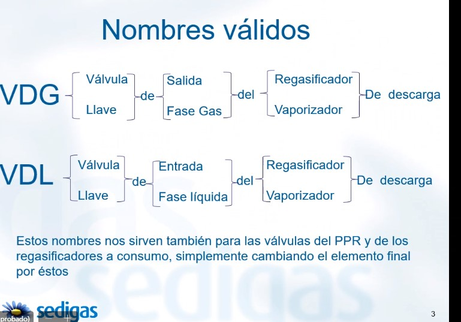
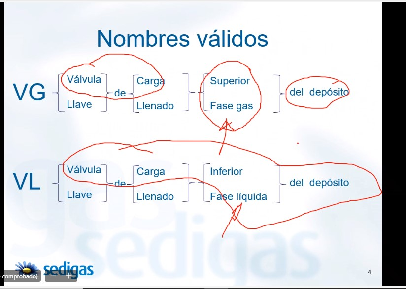
Frontal del depósito (diapositiva 9)
| N.º | Elemento |
|---|---|
| 1 | Válvula de salida del PPR (VSP) |
| 2 | Válvula de tres vías (V3) |
| 3 | Válvulas de seguridad del depósito (VES, 2 + 2) |
| 4 | Válvula de alivio o venteo (VA) |
| 5 | Válvula de entrada al PPR (VEP) |
| 6 | Válvula de seguridad de línea (Vs) |
| 7 | Regulador del PPR (RP) |
| 8 | Punto alto (Vpa, 95 %) |
| 9 | Válvula de carga inferior (VL, fase líquida) |
| 10 | Válvula de carga superior (VG, fase gas, ducha) |
| 11 | Válvula de salida a consumo (VC) |
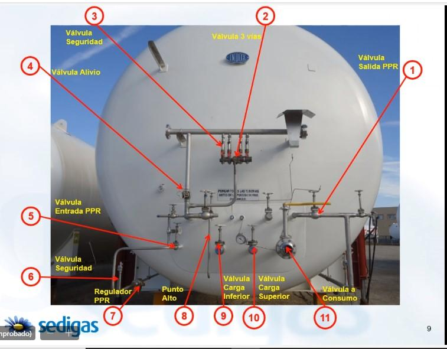
Conjunto de seguridad y control del depósito (diapositivas 7 y 8)
| N.º (dia. 7) | Elemento | N.º (dia. 8) | Elemento |
|---|---|---|---|
| 1 | Válvula de alivio (VA) | 1 | Válvula de carga superior (VG) |
| 2 | Válvula de seguridad (VES) | 2 | Válvula de carga inferior (VL) |
| 3 | Nivel (presión diferencial) | 3 | Válvula de seguridad (VES) |
| 4 | Manómetro de presión | 4 | Válvula de tres vías |
| 5 | Válvula de by-pass del nivel (Vb, manifold) | 5 | Nivel |
| 6 | Válvula de tres vías | 6 | Manómetro de presión |
| 7 | Transmisor de presión |
Pista: las cuatro VES van en fila sobre la válvula de tres vías (con volante rojo); el nivel es el reloj grande (escala 0–100 %) y el manómetro el pequeño.
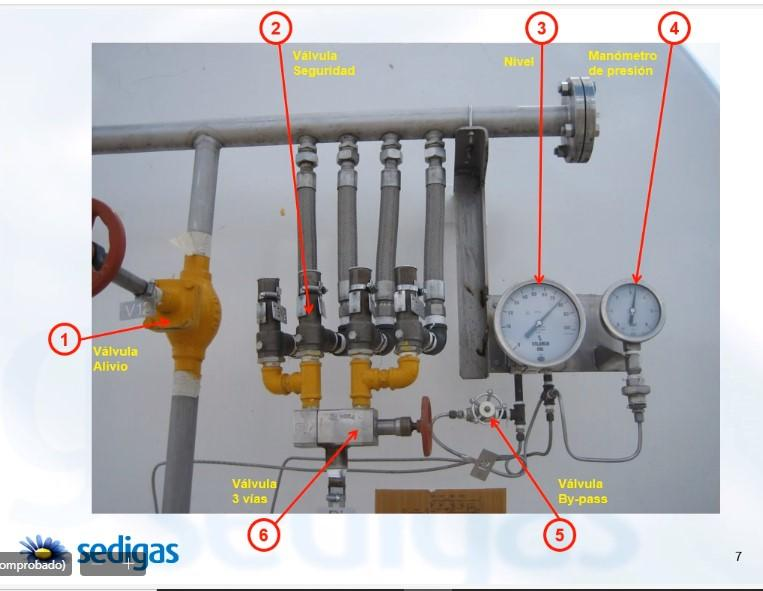
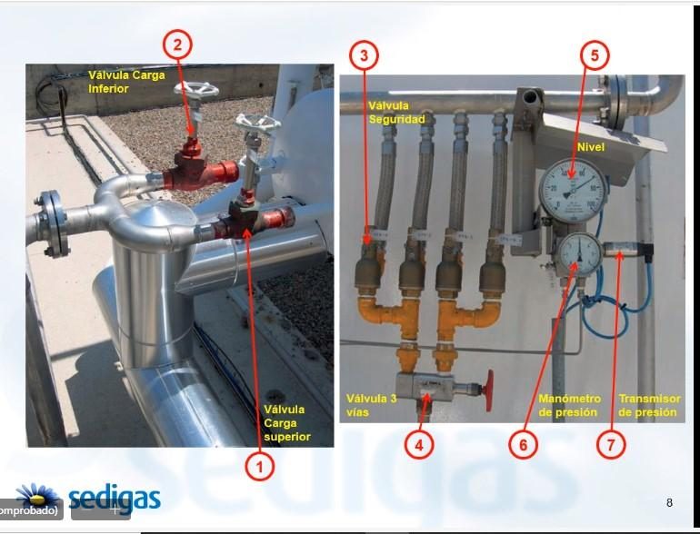
Conjunto de descarga (diapositiva 5)
| N.º | Elemento |
|---|---|
| 1 | Válvula de by-pass (VB, fase gas, 1") |
| 2 | Válvula de descarga (VD, 3") |
| 3 | Válvula de entrada al RD (VDL) |
| 4 | Válvula de salida del RD (VDG) |
Las cuatro van fijas en el límite del cubeto, con las mangueras criogénicas de inox corrugado y malla conectadas de forma permanente.
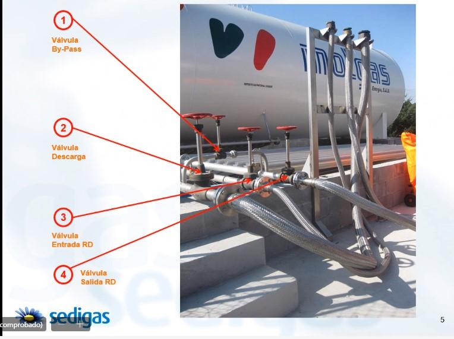
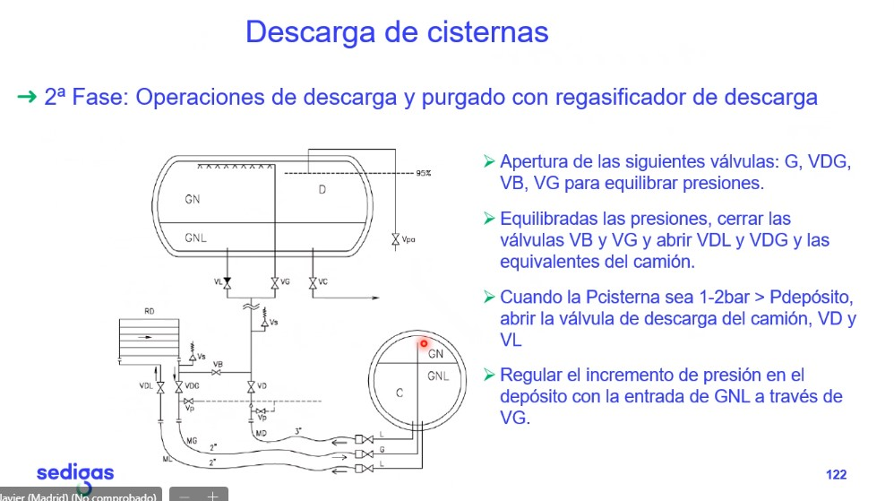
Regasificadores atmosféricos (diapositiva 11)
| N.º | Elemento |
|---|---|
| 1 | Válvula neumática de alternancia del regasificador |
| 2 | Válvula de seguridad (de línea) |
| 3 | Válvula manual de entrada al regasificador |
El hielo sobre tubos y válvulas indica que ese regasificador está en servicio.
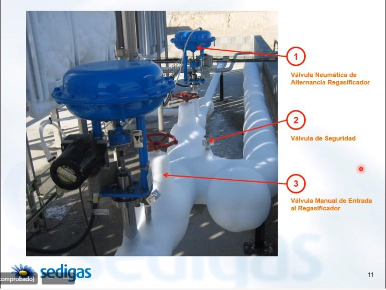
Circuito de agua caliente (diapositiva 12)
| N.º | Elemento |
|---|---|
| 1 | Válvula de entrada |
| 2 | Filtro |
| 3 | Bomba de circulación (dos líneas: una en reserva) |
| 4 | Válvula antirretorno |
| 5 | Válvula de salida |
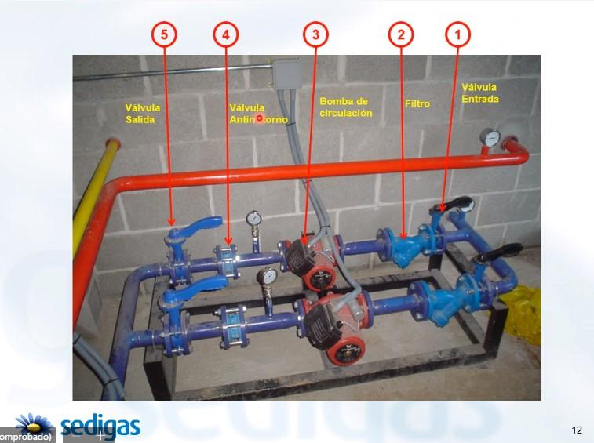
Regulación de salida y VCF
| Elemento | Dónde está |
|---|---|
| Válvula de entrada | Primera de la línea, tras el colector de entrada |
| Filtro y manómetro diferencial | Justo después de la entrada; el diferencial indica si el filtro se ensucia |
| Manómetro de presión | Entrada de la línea |
| VIS de máxima | Antes del regulador (o incorporada a él); corta si sube la presión de salida |
| Regulador | Cuerpo grande con cúpula de membrana |
| VES | En la salida, alivia a la atmósfera |
| Válvula de salida | Final de la línea |
| Válvula de frío (VCF) | Antes de la regulación, a la salida de los regasificadores; con actuador y sensor de temperatura |
La VCF protege lo que va en acero al carbono (regulación, odorización) y la red: acero en industria, casi siempre polietileno en distribución.
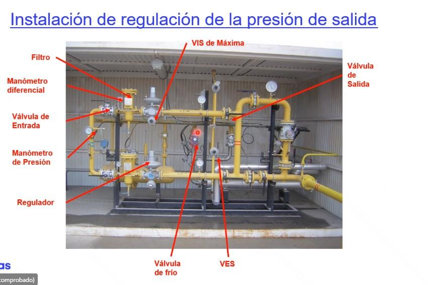
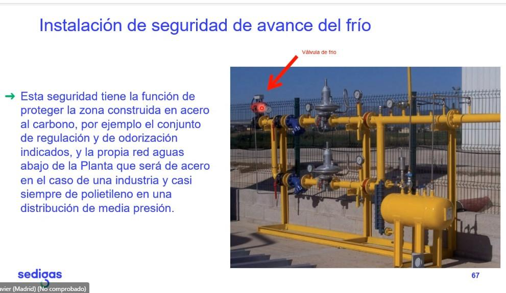
Otras instalaciones (diapositivas 74 y 75)
- Contraincendios: extintores e irrigación sobre depósito. Eléctrica: puesta a tierra, zonas ATEX. Seguridad: vallado, telecontrol, cámaras. Obra civil: cubetos y pantallas.
- Datos de la diapositiva 75: tierra < 20 Ω; varios depósitos por cubeto ≤ 270 m³; cubeto–depósito ≥ 1,5 m; entre depósitos del mismo cubeto ≥ 2 m; cubetos no adyacentes ≥ 4 m; pantalla si el punto de fuga está por encima del muro y a menos de 5 m; plantas > 270 m³ con válvula criogénica telemandada fuera del cubeto (telecomandada desde el centro de control si es no presencial).